P4. 눌러서 쓰는 소자: 누름의 리듬이 남는가
손가락 대신 servo가 소자를 누르고, 누른 리듬이 소자에 남아 끝에서 몇 번만 읽어도 알 수 있는지 본다
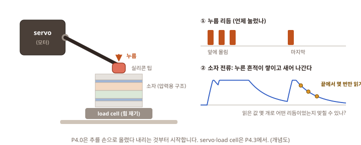
무엇을 하나 소자를 누릅니다. 처음에는 작은 추를 손으로 올렸다 내리고(P4.0), 나중에는 작은 모터(servo)가 정해진 리듬으로 네 번 두드립니다(P4.3–P4.5). 그동안 소자에 흐르는 전류를 계속 기록합니다. 장비가 오기 전에는 VS Code 실습 네 개로, PC만으로 분석을 먼저 연습합니다.
이 프로젝트를 끝내면 얻는 것 (1) 추를 올렸다 내릴 때 내 소자와 control(비교용 물건)의 전류–시간 기록 한 벌. (2) "누름이 끝난 뒤 전류를 1개만 읽어도 네 리듬 중 무엇이었는지 맞히나"를 숫자(0.25 = 찍기 수준, 1.00 = 다 맞힘)로 적은 결과표 c_report.md 한 장. 결과표는 실습하면서 하나씩 나옵니다. 지금 미리 이해하지 않아도 됩니다.
왜 하나 보통 센서는 누를 때마다 숫자를 보내고, 컴퓨터가 그 숫자를 모아 리듬을 알아냅니다. 소자가 눌린 흔적을 스스로 잠시 기억한다면, 컴퓨터는 끝에 몇 번만 읽으면 됩니다. 정말 그런지, 아니면 다른 이유로 맞히는 것인지 가려내는 것이 P4입니다.
- PC만으로 실습 1–440분 · 결과 그림 읽기
- →
- P4.0 추로 눌러 보기1–2시간 · 전류 기록
- →
- P4.1–P4.2 소자 구조·control여러 날 · 만들고 비교
- →
- P4.3–P4.4 servo·load cell여러 날 · 실습 5 · 기본 특성
- →
- P4.5 리듬 과제여러 날 · 실습 6 · 결과표
- →
- 끝P4.6·P4.7은 선택 · 맨 아래 [완료] 단추
P4.0–P4.2에서 눌렀을 때의 전류 변화(압력 응답)와 control 비교가 다른 사람이 따라 할 수 있게 기록되면 수준 2입니다. 리듬 과제에서 control보다 나은 결과(수준 3)가 나오지 않아도 괜찮습니다. 어떤 control과 비교해서 무엇이 없었는지를 남기면 끝입니다.
P2·P3의 소자는 전압으로 움직입니다. P4는 누름에 반응하는 새 구조(유연한 위 전극, 울퉁불퉁한 접합면 등)가 필요합니다. 그 구조가 압력에 반응할지, 반응에 시간의 흔적이 남을지는 아직 모릅니다. P2·P3가 성공해도 P4가 성공한다는 뜻이 아니고, 그 반대도 마찬가지입니다.
이야기부터: 왜 "누름"이고 왜 "끝에서 몇 번만"인가
손가락으로 책상을 "탁·탁·탁 … 탁" 두드리는 리듬을 떠올려 보세요. 앞에 세 번을 빠르게 치고 한 번은 늦게 칩니다. 다른 리듬은 "탁 … 탁·탁·탁"처럼 뒤에 몰려 있습니다. 두 리듬은 두드린 횟수가 같고, 처음부터 끝까지 걸린 시간도 같습니다. 다른 것은 언제 쳤느냐뿐입니다.
보통의 압력 센서로 이 리듬을 구별하려면 어떻게 할까요. 센서는 1초에 수십 번씩 "지금 힘이 얼마"라는 숫자를 보냅니다. 컴퓨터가 그 숫자를 모두 모아 두었다가 "힘이 커진 순간"을 찾아 리듬을 알아냅니다. 숫자가 많고, 그만큼 전지도 많이 씁니다.
이번에는 메모리폼 베개를 떠올려 보세요. 손으로 꾹 눌렀다 떼면 자국이 바로 사라지지 않고 몇 초에 걸쳐 천천히 돌아옵니다. 그래서 방금 누른 자리와 조금 전에 누른 자리는 자국의 깊이가 다릅니다. 손을 다 뗀 뒤에 베개를 한 번만 봐도 "어디를, 언제쯤 눌렀는지"를 어느 정도 알 수 있습니다.
P4가 묻는 것이 이것입니다. 눌린 소자의 전류가 메모리폼처럼 바로 돌아오지 않고 천천히 돌아온다면, 앞의 누름들의 흔적이 전류에 쌓입니다. 맨 위 그림의 ②처럼, 흔적이 쌓이고 새어 나가는 모양은 리듬마다 다를 것입니다. 그렇다면 네 번째 누름이 끝난 뒤 전류를 한 번이나 세 번만 읽어도 어느 리듬이었는지 맞힐 수 있을지 모릅니다. 센서가 숫자를 계속 보내는 대신, 센서 자체가 잠깐 기억을 하는 셈입니다.
그런데 "맞혔다"고 해서 바로 "이온이 기억했다"가 되지는 않습니다. 고무처럼 눌린 뒤 천천히 돌아오는 고분자의 성질, 눌릴 때 바뀌는 접촉 면적, 전극, 누르는 장치 자체도 같은 모양의 흔적을 만들 수 있습니다. 그래서 P4의 절반은 "무엇과 비교해야 하나"(control)입니다.
이 프로젝트가 차례로 묻는 것은 세 가지입니다. ① 내 소자가 누름에 반응하는가 → ② 그 반응에 이전 누름의 흔적이 남는가 → ③ 자극이 끝난 뒤 몇 번만 읽어도 리듬을 구별할 수 있는가.
무엇을 in-sensor라고 부르나
기자에 비유해 봅니다. 보통 센서는 보이는 것을 그대로 본사에 전화로 불러 주는 기자입니다. 정리는 본사(컴퓨터)가 합니다. P4가 바라는 소자는 보면서 수첩에 요약까지 해 두는 기자입니다. 본사는 끝에 수첩만 한 번 보면 됩니다. 이 차이에 이름을 붙여 둡니다.
sensor: 누름·빛·온도 같은 바깥 자극을 전기 신호로 바꾸는 부품. 체중계 안의 힘 재는 부품이 한 예입니다.
in-sensor computing: "센서 안에서 계산". 센서가 신호를 바꿀 뿐 아니라, 그 신호를 스스로 모으거나 걸러서 뒤의 컴퓨터가 할 일을 줄이는 방식. P4에서는 소자가 누름을 감지하면서 동시에 누른 흔적을 잠시 기억하는 것을 말합니다.
near-sensor computing: "센서 옆에서 계산". 센서는 따로 있고, 그 바로 옆의 작은 소자나 회로가 계산을 맡는 방식. P3의 ECG 경로가 이것입니다.
| 수준 | 감지 | 처리 | 예 |
|---|---|---|---|
| 일반 센서 | 센서 | 멀리 있는 CPU | 압력 센서 → ADC 100 Hz → 컴퓨터 |
| near-sensor (P3의 ECG 경로) | 센서 | 바로 옆의 이온 소자 | ECG module → 증폭 → 이온 소자 |
| in-sensor (P4) | 이온 소자 | 같은 이온 소자 | 누름이 소자 state를 바꾸고, 끝 state에 리듬 정보가 남음 |
CPU (central processing unit): 컴퓨터의 계산 담당 부품.
ADC (analog-to-digital converter): 전압을 숫자로 바꾸는 부품. "ADC 100 Hz"는 1초에 100번 숫자로 바꾼다는 뜻입니다(sampling rate 100 Hz). 숫자를 한 번 만들 때마다 전기를 조금씩 씁니다.
state: 소자가 지금 들고 있는 상태. P4에서는 "지금 전류가 평소보다 얼마나 큰가"로 봅니다. 메모리폼의 "지금 자국 깊이"에 해당합니다.
통계적으로 chance(아무렇게나 찍을 때의 점수)보다 잘 맞힌다는 것만으로 "이온이 계산했다"고 하지 않습니다. 압력 응답의 흔적은 고분자의 viscoelasticity(점탄성, 눌린 뒤 천천히 돌아오는 성질), 접촉 면적 변화, 전극, 누르는 장치 자체에서도 생길 수 있습니다. 그래서 아래 control 절이 있습니다.
준비: VS Code와 mylabs 폴더
처음이라면 처음 한 번: 내 컴퓨터 준비하기를 먼저 끝냅니다. 그 페이지 끝의 첫 실습에서 p0_hello.py를 ▷ 실행해 그림이 떴다면 준비가 된 것입니다.
모든 실습은 같은 순서입니다. VS Code 왼쪽 EXPLORER의 mylabs 폴더에 마우스 오른쪽 단추 → New File → 실습마다 적힌 파일 이름 → 코드 상자 오른쪽 위 복사 아이콘 → 편집기에 Ctrl+V → Ctrl+S → 오른쪽 위 ▷. 글자는 아래 TERMINAL에, 그래프는 따로 뜨는 그림 창에 나옵니다. 그림 창을 닫아야 프로그램이 끝납니다.
P4 실습이 만든 기록은 ion-projects-code\runs 폴더에 쌓입니다. 뒤 실습이 앞 실습의 기록을 읽으므로 번호 순서대로 합니다.
장비 없이 먼저: PC만으로 분석 연습 (40분)
진짜 소자를 servo로 수백 번 누른 뒤에는 그 기록을 분석해야 합니다. 분석 결과를 읽는 법을 그날 처음 배우면 헷갈립니다. 그래서 장비가 없는 지금, 컴퓨터가 만든 가짜 기록으로 같은 분석을 끝까지 한 번 해 봅니다.
mock: 진짜 장비 대신 컴퓨터가 수식으로 만든 가짜. 여기서는 "누르면 흔적이 남는 가짜 소자"를 정해 두고, 그것을 누른 척한 기록을 만듭니다. mock 결과는 실제 소자에 대해 아무것도 말해 주지 않습니다. 운전 연습장 점수가 도로 주행 점수가 아닌 것과 같습니다.
| 실습 | 하는 일 | 결과로 보는 것 |
|---|---|---|
| 1 | 리듬 일정 만들기 | 네 리듬이 언제 누르나 (막대 그림) |
| 2 | 가짜 소자를 누른 척 기록 | 힘·전류 곡선, 리듬마다 다른 '끝의 전류' |
| 3 | easy cue 점검 | 리듬마다 누른 힘·시간이 같았나 |
| 4 | 리듬 맞히기 | 같은 날 / 다른 날 점수 막대 |
실습 1. 리듬 일정 만들기 (p4_1_rhythm.py)
servo가 소자를 언제 누를지 시각표를 만듭니다. 리듬은 네 가지이고, 모두 4번 누르며 첫 누름부터 마지막 누름까지 걸리는 시간(1.8초)도 같습니다. 다른 것은 간격의 순서뿐입니다. 그래야 나중에 리듬을 맞혔을 때 "빨리 끝나서", "많이 눌러서" 같은 다른 이유를 뺄 수 있습니다.
이 시각표는 실습 2의 가짜 소자도, P4.5의 진짜 tapper도 똑같이 읽습니다.
| 리듬 (번호) | 느낌 | onset 사이 간격 |
|---|---|---|
| R1 고르게 (0) | 탁 — 탁 — 탁 — 탁 | 0.6 · 0.6 · 0.6초 |
| R2 앞에 몰림 (1) | 탁·탁·탁 ……… 탁 | 0.2 · 0.2 · 1.4초 |
| R3 뒤에 몰림 (2) | 탁 ……… 탁·탁·탁 | 1.4 · 0.2 · 0.2초 |
| R4 가운데 쉼 (3) | 탁·탁 ……… 탁·탁 | 0.2 · 1.4 · 0.2초 |
onset: 한 번의 누름이 시작되는 순간. 리듬은 onset과 onset 사이의 간격으로 정합니다.
trial: 리듬 하나를 한 번 끝까지 누르고 기록한 것. 시험 문제 한 개라고 생각하면 됩니다. 리듬마다 15번이면 trial은 60개.
jitter (흔들림): 간격에 일부러 넣는 ±10 %의 무작위 변화. 0.2초 간격이 어떤 trial에서는 0.19초, 어떤 trial에서는 0.21초가 됩니다. 매번 똑같은 숫자만 외워서 맞히지 못하게 하려는 것입니다.
할 일 mylabs에 새 파일 p4_1_rhythm.py → 아래 코드 붙여 넣기 → Ctrl+S → ▷.
mylabs/p4_1_rhythm.py
# ============================================================
# P4 실습 1 · 리듬 일정 만들기: 네 가지 리듬, 언제 누를까
#
# 전체 과정:
#
# 리듬 4가지 정하기 (누름 4번 → onset 사이 간격 3개)
# ↓
# 리듬마다 N_PER_RHYTHM번씩, 간격에 ±10 % jitter(흔들림)
# ↓
# 모든 trial의 총 길이(첫 onset → 마지막 onset)를 SPAN_S로 같게
# ↓
# trial 순서 섞기 → runs/rhythm_n15.npz 로 저장 (실습 2가 읽음)
# ↓
# 그림: 리듬마다 trial을 한 줄씩, 누른 순간을 막대로
#
# 이 실습은 장비가 필요 없습니다. 실물 실험(c_run)도 이 파일을 그대로 씁니다.
# ============================================================
import sys
from pathlib import Path
# 공용 코드(python 폴더)를 불러오려고 경로를 잡는다.
# 이 파일은 ion-projects-code/mylabs/ 안에 있으므로, 두 단계 위가 ion-projects-code 폴더.
CODE = Path(__file__).resolve().parent.parent # ion-projects-code 폴더
sys.path.insert(0, str(CODE / "python")) # 공용 코드 폴더를 찾을 수 있게
import numpy as np
import matplotlib.pyplot as plt
from c_rhythm import make_schedule # 공용 코드: 리듬 일정 만들기
# ============================================================
# 0. 그림 설정 — 건드리지 않아도 됩니다
# ============================================================
plt.rcParams.update({
"font.family": "Malgun Gothic", "axes.unicode_minus": False, "font.size": 11,
"legend.frameon": False, "axes.spines.top": False, "axes.spines.right": False,
})
# ============================================================
# 1. 바꿔 볼 수 있는 설정값 ← 여기를 바꿔 보세요
# ============================================================
N_PER_RHYTHM = 15 # 리듬마다 몇 번 (연습 15, 실물 실험 60)
SPAN_S = 1.8 # 첫 onset → 마지막 onset (초). 모든 리듬에서 같다
JITTER = 0.10 # 간격을 흔드는 정도 (0.10 = ±10 %)
SEED = 0 # 무작위 씨앗. 같은 SEED면 언제 돌려도 같은 일정
# ============================================================
# 2. 리듬 4가지 (공용 코드 c_rhythm.py의 RHYTHMS와 같은 순서)
# ============================================================
#
# 간격 3개의 비율 (합 = 1). SPAN_S = 1.8초면
# 1/3 = 0.6초, 1/9 = 0.2초, 7/9 = 1.4초
#
# 번호 이름 간격 (초) 느낌
# 0 R1 고르게 0.6 0.6 0.6 탁 — 탁 — 탁 — 탁
# 1 R2 앞에 몰림 0.2 0.2 1.4 탁·탁·탁 ……… 탁
# 2 R3 뒤에 몰림 1.4 0.2 0.2 탁 ……… 탁·탁·탁
# 3 R4 가운데 쉼 0.2 1.4 0.2 탁·탁 ……… 탁·탁
# ============================================================
NAMES_EN = ["R1 even", "R2 early", "R3 late", "R4 middle"] # TERMINAL용 (영어)
NAMES_KO = ["R1 고르게", "R2 앞에 몰림", "R3 뒤에 몰림", "R4 가운데 쉼"] # 그림용
COLORS = ["#2b59c3", "#d9822b", "#2a9d8f", "#9b59b6"]
# ============================================================
# 3. 일정 만들기 (공용 코드 한 줄)
# ============================================================
#
# gaps: trial마다 간격 3개 (초) → 모양 (trial 수, 3)
# y : trial마다 리듬 번호 0–3 → 정답
# 순서는 섞여 있다 (R1만 몰아서 누르면 그 사이 소자 변화가 리듬처럼 보일 수 있어서)
# ============================================================
gaps, y = make_schedule(N_PER_RHYTHM, SPAN_S, jitter=JITTER, seed=SEED)
out = CODE / "runs" / f"rhythm_n{N_PER_RHYTHM}.npz"
out.parent.mkdir(exist_ok=True)
np.savez(out, gaps=gaps, y=y, names=np.array(NAMES_EN), span_s=SPAN_S)
# ============================================================
# 4. 숫자로 확인
# ============================================================
print("=" * 52)
print("rhythm schedule")
print("=" * 52)
print(f"trials : {len(y)} ({len(NAMES_EN)} rhythms x {N_PER_RHYTHM}), order shuffled")
print(f"span : {SPAN_S} s (first onset -> last onset, same for all)")
print(f"jitter : +/-{JITTER * 100:.0f} %")
print()
print("rhythm gap1 (s) gap2 (s) gap3 (s) mean of trials")
print("--------- -------- -------- --------")
for c, name in enumerate(NAMES_EN):
g = gaps[y == c].mean(0)
print(f"{name:<10} {g[0]:.2f} {g[1]:.2f} {g[2]:.2f}")
print()
print(f"gap range : {gaps.min():.2f} - {gaps.max():.2f} s")
print(f"first 8 rhythms in order: {y[:8].tolist()}")
print(f"saved : runs/{out.name}")
# ============================================================
# 5. 그림: 리듬마다 trial을 한 줄씩. 막대 = 누르는 80 ms
# ============================================================
HOLD = 0.08 # 누르는 시간 (초). firmware C_tapper와 같은 값
READ = [0.3, 0.6, 1.0] # 마지막 onset 뒤 전류를 읽을 시점 (초)
fig, ax = plt.subplots(figsize=(8, 5.2))
row = 0
centers = []
for c in range(4):
trials = gaps[y == c]
start = row
for g in trials:
onsets = np.r_[0, np.cumsum(g)] # 첫 onset = 0초
ax.broken_barh([(o, HOLD) for o in onsets], (row, 0.8), color=COLORS[c])
row += 1
centers.append((start + row) / 2)
row += 2 # 리듬 사이 빈 줄
# 마지막 onset(모든 리듬에서 SPAN_S)과 읽기 시점 (그림 맨 위)
ax.axvline(SPAN_S, color="0.4", ls="--", lw=1)
ax.text(SPAN_S - 0.03, -0.07 * row, "마지막 onset", ha="right", va="bottom", color="0.3", fontsize=10)
for d in READ:
ax.plot(SPAN_S + d, -0.035 * row, "o", color="#7a3db8", ms=7)
ax.text(SPAN_S + 0.65, -0.07 * row, "여기서 읽기 (+0.3·0.6·1.0초)", ha="center", va="bottom",
color="#7a3db8", fontsize=10)
ax.set_yticks(centers, NAMES_KO)
ax.set_ylim(row - 1.5, -0.15 * row) # 위쪽이 첫 줄 (아래로 갈수록 줄 번호가 커짐)
ax.set_xlim(-0.1, SPAN_S + 1.15)
ax.set_xlabel("첫 onset부터의 시간 (s)")
ax.set_title(f"리듬 4가지 × {N_PER_RHYTHM}번: 막대 = 누르는 순간 (80 ms)", loc="left")
ax.spines["left"].set_visible(False)
ax.tick_params(axis="y", length=0)
fig.tight_layout()
plt.show() # 그림 창이 뜹니다. 창을 닫으면 프로그램이 끝납니다.코드에서 볼 곳.
- 맨 위
CODE = …와sys.path.insert두 줄: P4 실습은python폴더의 공용 코드(진짜 실험 때도 쓰는 프로그램)를 불러다 씁니다. 이 두 줄이 "공용 코드는 저 폴더에 있다"고 알려 줍니다. 모든 P4 실습 파일에 같은 줄이 있습니다. - 2번 상자: 네 리듬의 간격 표. 1.8초를 3등분하면 0.6초, 9등분한 1칸·7칸이 0.2초·1.4초입니다.
- 3번 상자의
make_schedule(...): 공용 코드 한 줄이 일정을 만듭니다.gaps는 trial마다 간격 3개,y는 trial마다 정답(리듬 번호 0–3). trial 순서는 섞여 있습니다. - 5번 상자: 첫 onset을 0초로 놓고, 누른 순간마다 80 ms짜리 막대를 그립니다.
▷ 실행하면:
PS C:\Users\내이름\Desktop\ion-projects-code> & python mylabs/p4_1_rhythm.py
====================================================
rhythm schedule
====================================================
trials : 60 (4 rhythms x 15), order shuffled
span : 1.8 s (first onset -> last onset, same for all)
jitter : +/-10 %
rhythm gap1 (s) gap2 (s) gap3 (s) mean of trials
--------- -------- -------- --------
R1 even 0.60 0.60 0.59
R2 early 0.20 0.20 1.40
R3 late 1.40 0.20 0.20
R4 middle 0.20 1.40 0.20
gap range : 0.17 - 1.44 s
first 8 rhythms in order: [2, 0, 1, 1, 0, 0, 2, 3]
saved : runs/rhythm_n15.npz
PS C:\Users\내이름\Desktop\ion-projects-code>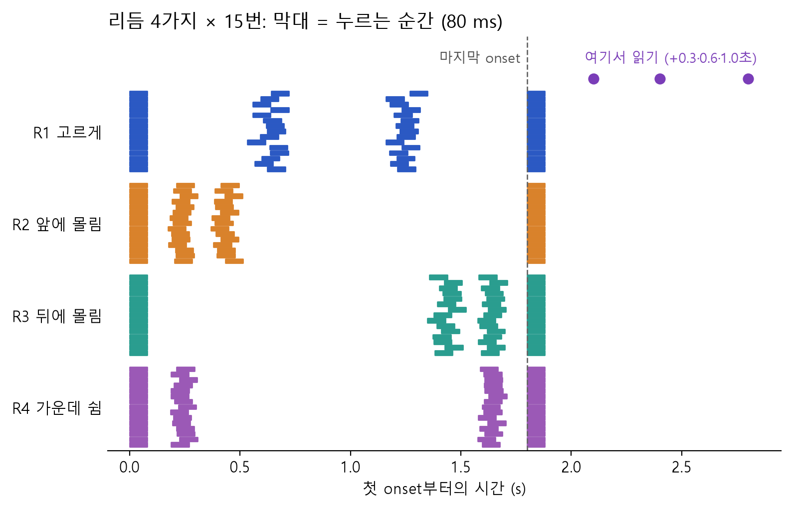
결과가 뜻하는 것. 간격 평균은 표대로 0.6 / 0.2 / 1.4초입니다. 마지막 누름 시각이 모든 리듬에서 같으니, 끝에서 읽는 시점도 모든 리듬에서 같습니다. 리듬마다 다른 것은 "그 전에 언제 눌렀나"뿐입니다. 소자가 그것을 기억해야 끝에서 리듬을 알 수 있습니다.
JITTER = 0.10을 JITTER = 0으로 바꾸고 Ctrl+S → ▷. 그림이 어떻게 바뀔지 먼저 예상해 보세요.
흔들림이 없어져 같은 리듬의 15줄이 똑같이 겹쳐 반듯한 기둥이 됩니다. TERMINAL의 gap range도 0.20 - 1.40 s가 됩니다. 이 일정으로는 readout이 "정확히 0.2초"를 외워 버릴 수 있어서 실험에는 jitter를 둡니다.
확인했으면 0.10으로 되돌리고 한 번 더 ▷ 합니다. 실습 2가 이 파일이 저장한 일정을 읽기 때문입니다.
만든 파일: runs\rhythm_n15.npz (컴퓨터용 숫자 파일이라 열지 않습니다. 실습 2가 읽어 갑니다.)
실습 2. 가짜 소자를 리듬대로 누른 척하기 (p4_2_mock.py)
실습 1의 시각표대로 가짜 소자를 누른 척하고, trial마다 누른 힘과 소자 전류를 기록합니다. 볼 것은 하나입니다. 마지막 누름 뒤, 리듬마다 전류의 높이가 다른가? 다르다면 끝에서 한 번만 읽어도 리듬을 알 수 있습니다.
기록은 진짜 실험(P4.5)과 같은 모양의 폴더로 저장됩니다. 그래서 실습 3·4의 분석을 나중에 진짜 기록에도 그대로 씁니다.
이 가짜 소자는 바닥에 작은 구멍이 난 양동이처럼 움직이도록 정해 두었습니다. 한 번 누르면 양동이에 물이 조금 찹니다. 물은 구멍으로 천천히 빠집니다. 전류는 남은 물이 많을수록 커집니다. 그래서 빠르게 연달아 누르면 물이 쌓이고, 오래 쉬면 빠집니다.
TAU (τ, time constant): 물이 빠지는 빠르기. TAU = 0.6초면 0.6초 뒤에 처음 물의 약 3분의 1이 남습니다. P1에서 본 τ와 같은 뜻입니다.
session: 같은 소자를 잰 하루치 기록. 실제 실험은 날마다 조금씩 다르므로, mock에서도 첫째 날(session 1)과 둘째 날(session 2)을 따로 만듭니다.
baseline (기준 전류): 누르기 전, 가만히 있을 때의 전류. 첫째 날 97 nA였던 것이 둘째 날 67 nA일 수 있습니다(nA = 10억분의 1 A). mock은 날마다 baseline과 누르는 힘을 일부러 조금 다르게 만듭니다.
할 일 mylabs에 새 파일 p4_2_mock.py → 붙여 넣기 → Ctrl+S → ▷. 그림 창이 두 개 뜹니다.
mylabs/p4_2_mock.py
# ============================================================
# P4 실습 2 · mock 기록: 가짜 소자를 리듬대로 누른 척하기
#
# 전체 과정:
#
# 실습 1의 리듬 일정 (runs/rhythm_n15.npz) 읽기
# ↓
# trial마다: 누른 힘(force) 곡선 만들기 → 가짜 소자의 전류 계산
# 흔적이 남는 소자: 누를 때마다 state가 올라가고, TAU초 정도에 걸쳐 천천히 빠진다
# 기억 없는 소자: 전류가 '지금 힘'에만 비례 (떼면 바로 원래대로)
# ↓
# 첫째 날(session 1)·둘째 날(session 2)을 따로 저장
# → runs/c_mock_memory_day1, runs/c_mock_memory_day2
# (실물 실험 c_run과 똑같은 모양의 폴더 → 실습 3·4가 그대로 분석)
# ↓
# 그림 1: 한 trial의 힘과 전류 그림 2: 리듬 4개의 전류를 겹쳐 보기
#
# mock 결과는 진짜 소자에 대해 아무것도 말해 주지 않습니다. 분석을 익히는 연습장입니다.
# ============================================================
import shutil
import sys
from pathlib import Path
# 공용 코드(python 폴더)를 불러오려고 경로를 잡는다.
CODE = Path(__file__).resolve().parent.parent # ion-projects-code 폴더
sys.path.insert(0, str(CODE / "python")) # 공용 코드 폴더를 찾을 수 있게
import numpy as np
import matplotlib.pyplot as plt
from c_mock import simulate, HOLD, LEAD # 공용 코드: 가짜 소자 계산
from c_rhythm import end_features # 공용 코드: 마지막 onset 뒤 전류 읽기
from common import load_json # 공용 코드: 설정 파일 읽기
from measure_seq import run_trials # 공용 코드: trial마다 기록 저장 (실물과 같음)
# ============================================================
# 0. 그림 설정 — 건드리지 않아도 됩니다
# ============================================================
plt.rcParams.update({
"font.family": "Malgun Gothic", "axes.unicode_minus": False, "font.size": 11,
"legend.frameon": False, "axes.spines.top": False, "axes.spines.right": False,
})
# ============================================================
# 1. 바꿔 볼 수 있는 설정값 ← 여기를 바꿔 보세요
# ============================================================
MEMORY = True # True: 흔적이 남는 가짜 소자, False: 기억 없는 가짜 소자
TAU = 0.6 # 흔적이 빠지는 시간 (초). 0.6초 뒤 처음의 약 1/3이 남음
SESSIONS = [1, 2] # 만들 날(session) 번호. 날마다 baseline·힘이 조금 다르다
RHYTHM_FILE = "rhythm_n15.npz" # 실습 1이 만든 일정 (runs 폴더 안)
# ============================================================
# 2. 준비: 일정 읽기, 저장할 폴더 이름
# ============================================================
MODEL = "memory" if MEMORY else "memoryless"
FOLDER = "c_mock_memory" if MEMORY else "c_mock_nomem" # → c_mock_memory_day1 …
d = np.load(CODE / "runs" / RHYTHM_FILE)
gaps, y = d["gaps"], d["y"]
NAMES_KO = ["R1 고르게", "R2 앞에 몰림", "R3 뒤에 몰림", "R4 가운데 쉼"]
COLORS = ["#2b59c3", "#d9822b", "#2a9d8f", "#9b59b6"]
cfg = load_json(CODE / "python" / "config_c_mock.json") # 연습용 설정 (고치지 않음)
# ============================================================
# 3. 가짜 소자 (공용 코드 c_mock.simulate가 하는 일)
# ============================================================
#
# 힘 F: 누를 때마다 80 ms 동안 반달 모양으로 솟는다 (약 2 N, 누를 때마다 ±5 %)
#
# 흔적이 남는 소자 (구멍 난 양동이):
# state x ← x × exp(−0.02/TAU) + (지금 힘에 비례한 양)
# └ 20 ms마다 조금씩 빠짐 └ 누르는 동안 물이 참
# 전류 I = baseline × (1 + x)
#
# 기억 없는 소자: 전류 I = baseline × (1 + 0.4 × 지금 힘)
#
# session(날)마다 baseline이 약 20 %, 힘이 약 10 % 다르다 (실제 날마다 조건이 다른 것을 흉내)
# 전류는 20 ms마다, 힘은 12.5 ms마다(load cell 80 SPS) 기록
# ============================================================
examples = {} # 그림에 쓸 trial (첫째 날, 리듬마다 첫 trial)
summary = []
for s in SESSIONS:
srng = np.random.default_rng(1000 + s) # 날마다 정해진 차이 (c_mock.py와 같은 규칙)
sess = dict(force=1 + 0.1 * srng.standard_normal(), base=1 + 0.2 * srng.standard_normal())
def measure_trial(n, gaps_row):
rng = np.random.default_rng(s * 100000 + n) # trial마다 같은 잡음 (다시 돌려도 같음)
t, I, onsets, tf, F = simulate(gaps_row, rng, MODEL, sess, tau=TAU)
state = end_features(t, I, onsets[-1]) # 마지막 onset + 0.3/0.6/1.0초 전류
raw = dict(t=t, I=I, compliance=np.zeros(len(t), bool), onsets_ms=onsets * 1000,
force_t_ms=tf * 1000, force_N=F)
if s == SESSIONS[0] and int(y[n]) not in examples:
examples[int(y[n])] = (t, I, onsets, tf, F)
return state, raw
run_dir = CODE / "runs" / f"{FOLDER}_day{s}"
if run_dir.exists():
shutil.rmtree(run_dir) # mock은 몇 초면 다시 만드니, 매번 새로 만든다
run_cfg = dict(cfg, device=dict(cfg["device"], mock_model=MODEL, session=s, tau=TAU))
S, done = run_trials(run_cfg, gaps, str(run_dir), measure_trial, 3,
extra={"y": y}, log=lambda *_: None)
summary.append((run_dir.name, sess, S[:, 0]))
# ============================================================
# 4. 숫자로 확인
# ============================================================
print("=" * 60)
print(f"mock records: {MODEL} device, TAU = {TAU} s, {len(y)} trials per session")
print("=" * 60)
for name, sess, _ in summary:
print(f"saved: runs/{name} (baseline x{sess['base']:.2f}, force x{sess['force']:.2f})")
print()
print("current at last onset + 0.3 s (nA), mean of trials per rhythm")
print("rhythm " + "".join(f"{name:>22}" for name, _, _ in summary))
for c in range(4):
print(f"R{c + 1} " + "".join(f"{e1[y == c].mean() * 1e9:>22.1f}" for _, _, e1 in summary))
# ============================================================
# 5. 그림 1: 한 trial (R2 앞에 몰림) 의 힘과 전류
# ============================================================
t, I, onsets, tf, F = examples[1]
fig, (a1, a2) = plt.subplots(2, 1, figsize=(8, 5.2), sharex=True, height_ratios=[1, 1.4])
a1.plot(tf, F, color="#c0392b", lw=1.6)
a1.set_ylabel("force (N)")
a1.set_title("한 trial (R2 앞에 몰림, 첫째 날): 위 = 누른 힘, 아래 = 가짜 소자의 전류", loc="left")
a2.plot(t, I * 1e9, color="#2b59c3", lw=1.6)
reads = onsets[-1] + np.array([0.3, 0.6, 1.0])
a2.plot(reads, np.interp(reads, t, I) * 1e9, "o", color="#7a3db8", ms=7, label="끝에서 읽는 점 (+0.3·0.6·1.0초)")
for o in onsets:
for ax in (a1, a2):
ax.axvspan(o, o + HOLD, color="#c0392b", alpha=0.12, lw=0)
a2.set_ylabel("current (nA)")
a2.set_xlabel("time (s)")
fig.tight_layout(rect=(0, 0.07, 1, 1))
fig.legend(*a2.get_legend_handles_labels(), loc="lower center")
# ============================================================
# 6. 그림 2: 리듬 4개의 전류를 마지막 onset에 맞춰 겹치기
# ============================================================
#
# 모든 리듬의 마지막 onset은 같은 시각(LEAD + SPAN)에 온다.
# 끝에서 읽는 점(보라 세로선)에서 네 곡선의 높이가 다르면 → 한 번만 읽어도 리듬을 알 수 있다.
# ============================================================
fig2, ax = plt.subplots(figsize=(8, 4.2))
for c in range(4):
t, I, onsets, tf, F = examples[c]
ax.plot(t, I * 1e9, color=COLORS[c], lw=1.6, label=NAMES_KO[c])
last = examples[0][2][-1]
for dly in (0.3, 0.6, 1.0):
ax.axvline(last + dly, color="#7a3db8", ls=":", lw=1.3)
ax.set_xlabel("time (s)")
ax.set_ylabel("current (nA)")
ax.set_title(f"리듬 4개의 전류 ({'흔적이 남는' if MEMORY else '기억 없는'} 가짜 소자, TAU = {TAU} s)"
" · 보라 점선 = 끝에서 읽는 시점", loc="left", fontsize=10.5)
fig2.tight_layout(rect=(0, 0.08, 1, 1))
fig2.legend(*ax.get_legend_handles_labels(), loc="lower center", ncol=4)
plt.show() # 그림 창 두 개가 뜹니다. 둘 다 닫아야 프로그램이 끝납니다.코드에서 볼 곳.
- 1번 상자:
MEMORY(흔적이 남는 소자인가)와TAU(흔적이 빠지는 빠르기). 바꿔 보기에서 둘 다 바꿔 봅니다. - 3번 상자의 주석: 양동이를 식으로 적은 것.
x × exp(−0.02/TAU)는 "20 ms마다 남은 물의 일부가 빠진다", 그 뒤의 더하기는 "누르는 동안 물이 찬다"입니다. 전류 = baseline × (1 + x). measure_trial: trial 하나를 "재는" 방법. 여기서는 가짜 소자 계산이 들어 있고, 진짜 실험(실습 6)에서는 같은 자리에 소스미터와 tapper를 부르는 함수가 들어갑니다.run_trials가 trial마다 이 함수를 부르고 결과를 파일로 저장합니다.shutil.rmtree: 같은 이름의 폴더가 있으면 지우고 새로 만듭니다. mock은 몇 초면 다시 만들 수 있어서입니다.
▷ 실행하면:
PS C:\Users\내이름\Desktop\ion-projects-code> & python mylabs/p4_2_mock.py
============================================================
mock records: memory device, TAU = 0.6 s, 60 trials per session
============================================================
saved: runs/c_mock_memory_day1 (baseline x0.97, force x1.09)
saved: runs/c_mock_memory_day2 (baseline x0.67, force x1.01)
current at last onset + 0.3 s (nA), mean of trials per rhythm
rhythm c_mock_memory_day1 c_mock_memory_day2
R1 117.4 80.1
R2 113.1 77.6
R3 127.0 86.4
R4 121.2 82.4
PS C:\Users\내이름\Desktop\ion-projects-code>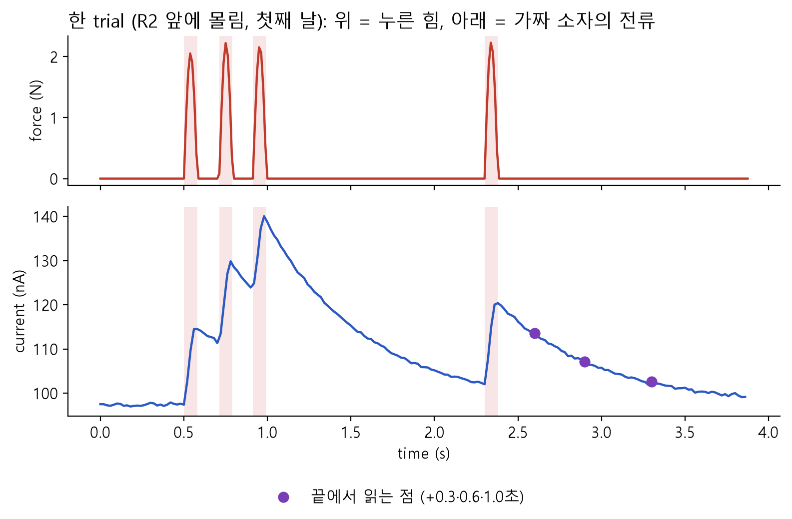
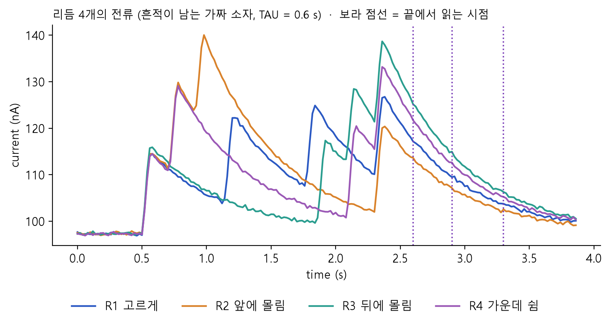
결과가 뜻하는 것. TERMINAL 아래 표는 "마지막 onset 0.3초 뒤 전류"의 리듬별 평균입니다. 첫째 날은 R1 117, R2 113, R3 127, R4 121 nA로 리듬마다 다릅니다. 바로 전에 몰아서 누른 R3은 물이 많이 남았고, 1.4초를 쉰 뒤 한 번만 누른 R2는 많이 빠졌습니다.
둘째 날도 순서(R3 > R4 > R1 > R2)는 같지만 모든 값이 통째로 약 30 % 낮습니다. baseline이 첫째 날의 0.97배에서 0.67배로 바뀌었기 때문입니다(TERMINAL의 saved: 두 줄 끝의 baseline x…). 이 차이가 실습 4에서 문제를 일으킵니다.
MEMORY = True를 MEMORY = False(기억 없는 가짜 소자)로 바꾸고 ▷. 그림 3의 네 곡선은 끝에서 어떻게 될까요?
누를 때만 전류가 솟고, 떼면 바로 baseline으로 돌아갑니다. 그래서 끝에서 읽는 시점에는 네 곡선이 한 줄로 겹칩니다(첫째 날 네 리듬 모두 약 97 nA). 끝에서 읽으면 리듬을 알 방법이 없습니다.
PS C:\Users\내이름\Desktop\ion-projects-code> & python mylabs/p4_2_mock.py
============================================================
mock records: memoryless device, TAU = 0.6 s, 60 trials per session
============================================================
saved: runs/c_mock_nomem_day1 (baseline x0.97, force x1.09)
saved: runs/c_mock_nomem_day2 (baseline x0.67, force x1.01)
current at last onset + 0.3 s (nA), mean of trials per rhythm
rhythm c_mock_nomem_day1 c_mock_nomem_day2
R1 97.2 67.4
R2 97.4 67.4
R3 97.2 67.4
R4 97.3 67.3
PS C:\Users\내이름\Desktop\ion-projects-code>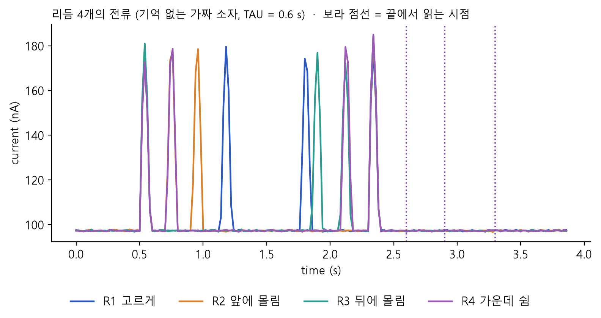
이 기록은 c_mock_nomem_day1, c_mock_nomem_day2라는 다른 폴더에 저장되어, 앞의 기록은 그대로 남습니다. 실습 4의 바꿔 보기에서 씁니다. 확인했으면 MEMORY = True로 되돌려 둡니다.
만든 파일: runs 안에 c_mock_memory_day1, c_mock_memory_day2 폴더. 안은 이렇게 생겼고, 진짜 실험의 기록 폴더도 똑같습니다.
runs\c_mock_memory_day1\
manifest.json 이 기록의 조건 (어떤 소자, 몇째 날, trial 몇 개). VS Code로 열어 볼 수 있음
checkpoint.npz 어느 trial까지 끝났나 (열지 않음)
raw\
trial_00000.npz … trial_00059.npz trial 60개의 전류·힘·onset 기록 (열지 않음)실습 3. easy cue 점검: 리듬마다 누른 방식이 같았나 (p4_3_cues.py)
리듬을 맞히기 전에, 기록에 엉뚱한 힌트가 섞여 있지 않은지 봅니다. 예를 들어 R2만 유난히 세게 눌렸다면, 소자가 아무것도 기억하지 않아도 "센 누름 = R2"로 맞힐 수 있습니다. 그래서 전류는 보지 않고 load cell이 잰 힘만으로 리듬마다 누른 방식이 같았는지 견줍니다.
easy cue (쉬운 단서): 소자의 기억과 상관없이 리듬을 알려 주는 엉뚱한 힌트. 시험 문제에 비유하면, 정답이 늘 '가'인 문제만 글씨가 굵게 인쇄된 것과 같습니다.
load cell: 힘을 재는 부품. 전자저울 안에 든 것과 같습니다(P4.3에서 다룹니다). mock에서는 컴퓨터가 힘 기록도 함께 만듭니다.
SD (standard deviation, 표준편차): 값들이 평균에서 보통 얼마나 벗어나 있는지. 2.18 +/- 0.07은 "평균 2.18이고, 대부분 2.11–2.25 사이"라는 뜻입니다.
| 이름 | 뜻 |
|---|---|
| peak force (N) | 누름 4번 각각의 가장 큰 힘의 평균. N(뉴턴)은 힘의 단위로, 2 N은 약 200 g짜리 물건의 무게 |
| hold (ms) | 힘이 그 누름 최대의 절반을 넘은 시간. servo가 내려가 있는 80 ms보다 짧게 나오는 것이 정상 |
| span (s) | 첫 onset → 마지막 onset까지의 시간 |
할 일 mylabs에 새 파일 p4_3_cues.py → 붙여 넣기 → Ctrl+S → ▷.
mylabs/p4_3_cues.py
# ============================================================
# P4 실습 3 · easy cue 점검: 리듬마다 누른 힘·누름 시간이 달랐나
#
# 전체 과정:
#
# 실습 2의 기록 폴더 읽기 (runs/c_mock_memory_day1, …_day2)
# ↓
# trial마다 load cell 힘 기록에서 세 숫자 뽑기
# peak force : 누름 4번 각각의 가장 큰 힘 → 평균 (N)
# hold : 힘이 그 누름 최대의 절반을 넘은 시간 → 평균 (ms)
# span : 첫 onset → 마지막 onset (s)
# ↓
# 같은 날 안에서 리듬 4개끼리 견주기 (평균 ± SD)
# ↓
# 그림: 리듬마다 trial 하나 = 점 하나
#
# 왜? 리듬마다 힘이 달랐다면, 소자가 기억하지 않아도 '힘'만 보고 리듬을 맞힐 수 있다.
# 그런 엉뚱한 힌트(easy cue)가 없는지 먼저 본다. 전류는 아직 보지 않는다.
# ============================================================
import sys
from pathlib import Path
# 공용 코드(python 폴더)를 불러오려고 경로를 잡는다.
CODE = Path(__file__).resolve().parent.parent # ion-projects-code 폴더
sys.path.insert(0, str(CODE / "python")) # 공용 코드 폴더를 찾을 수 있게
import numpy as np
import matplotlib.pyplot as plt
from c_analyze import load_session # 공용 코드: 기록 폴더 하나 읽기 (실물 분석과 같음)
from common import print_table # 공용 코드: TERMINAL에 표 찍기
# ============================================================
# 0. 그림 설정 — 건드리지 않아도 됩니다
# ============================================================
plt.rcParams.update({
"font.family": "Malgun Gothic", "axes.unicode_minus": False, "font.size": 11,
"legend.frameon": False, "axes.spines.top": False, "axes.spines.right": False,
})
# ============================================================
# 1. 바꿔 볼 수 있는 설정값 ← 여기를 바꿔 보세요
# ============================================================
# 분석할 기록 폴더 (runs 안). 실물 기록이면 예: ["c_dev01_day1"]
RUNS = ["c_mock_memory_day1", "c_mock_memory_day2"]
# ============================================================
# 2. 기록 읽기
# ============================================================
#
# load_session은 폴더 안의 trial 파일(raw/trial_00000.npz …)을 하나씩 열어
# trial마다 { y(리듬 번호), peak, hold, span, 그리고 실습 4가 쓸 전류 숫자들 }을 만든다.
# ============================================================
sessions = {name: load_session(str(CODE / "runs" / name)) for name in RUNS}
NAMES_KO = ["R1 고르게", "R2 앞에 몰림", "R3 뒤에 몰림", "R4 가운데 쉼"]
def values(rows, key, rhythm, scale=1.0):
"""한 날(rows)에서 그 리듬 trial들의 key 값 목록"""
return np.array([r[key] for r in rows if r["y"] == rhythm]) * scale
# ============================================================
# 3. 표: 리듬마다 평균 +/- SD
# ============================================================
#
# SD(표준편차) = 값들이 평균에서 보통 얼마나 벗어나나.
# 리듬끼리의 평균 차이가 각자의 SD보다 작으면 → 힘으로는 리듬을 가릴 수 없다 (좋음).
# ============================================================
rows_t = []
for name, rows in sessions.items():
for c in range(4):
cells = []
for key, scale, fmt in (("peak", 1, ".2f"), ("hold", 1000, ".1f"), ("span", 1, ".2f")):
v = values(rows, key, c, scale)
cells.append(f"{np.nanmean(v):{fmt}} +/- {np.nanstd(v):{fmt}}")
rows_t.append([name, f"R{c + 1}"] + cells)
print("Easy-cue check (mean +/- SD per rhythm)")
print_table(["session", "rhythm", "peak force (N)", "hold (ms)", "span (s)"], rows_t, left=(0,))
print()
for name, rows in sessions.items():
means = [np.nanmean(values(rows, "peak", c)) for c in range(4)]
sds = [np.nanstd(values(rows, "peak", c)) for c in range(4)]
print(f"{name}: peak force spread between rhythms {max(means) - min(means):.3f} N, "
f"typical SD within a rhythm {np.mean(sds):.3f} N")
# ============================================================
# 4. 그림: 세 칸 (peak force · hold · span). 점 하나 = trial 하나
# ============================================================
fig, axes = plt.subplots(1, 3, figsize=(8, 4.0))
marks = ["o", "s", "^", "D"]
for ax, (key, scale, label) in zip(axes, (("peak", 1, "peak force (N)"),
("hold", 1000, "hold (ms)"),
("span", 1, "span (s)"))):
for k, (name, rows) in enumerate(sessions.items()):
for c in range(4):
v = values(rows, key, c, scale)
xc = c + (k - (len(sessions) - 1) / 2) * 0.3 # 날마다 조금 옆으로 비켜 놓기
x = xc + np.random.default_rng(c).uniform(-0.07, 0.07, len(v)) # 점이 겹치지 않게 살짝 흩기
ax.plot(x, v, marks[k % 4], ms=4, alpha=0.55, color=f"C{k}",
label=name if (c == 0 and ax is axes[0]) else None)
ax.plot([xc - 0.12, xc + 0.12], [np.nanmean(v)] * 2, color="black", lw=2) # 평균
ax.set_xticks(range(4), ["R1", "R2", "R3", "R4"])
ax.set_title(label, loc="left", fontsize=11)
axes[2].set_ylim(1.7, 1.9) # span은 모두 1.8초
axes[2].set_yticks([1.7, 1.8, 1.9])
fig.suptitle("리듬마다 누른 방식이 같았나? (검은 가로선 = 평균)", x=0.02, ha="left", fontsize=12)
fig.tight_layout(rect=(0, 0.08, 1, 1))
fig.legend(*axes[0].get_legend_handles_labels(), loc="lower center", ncol=len(sessions))
plt.show() # 그림 창이 뜹니다. 창을 닫으면 프로그램이 끝납니다.코드에서 볼 곳.
- 1번 상자
RUNS: 분석할 기록 폴더 이름. 진짜 기록을 분석할 때도 이 줄만 바꿉니다. - 2번 상자
load_session: 공용 코드입니다. 폴더 안의 trial 파일을 하나씩 열어 trial마다 숫자(peak, hold, span, 그리고 실습 4가 쓸 전류 값들)를 뽑습니다. - 3번 상자: 리듬마다 평균 +/- SD를 표로 찍습니다. 마지막 두 줄은 "리듬 사이의 힘 차이"와 "한 리듬 안의 흩어짐(SD)"을 나란히 적어 견주기 쉽게 한 것입니다.
▷ 실행하면:
PS C:\Users\내이름\Desktop\ion-projects-code> & python mylabs/p4_3_cues.py
Easy-cue check (mean +/- SD per rhythm)
session rhythm peak force (N) hold (ms) span (s)
------------------ ------ -------------- ------------- -------------
c_mock_memory_day1 R1 2.18 +/- 0.07 39.6 +/- 2.2 1.80 +/- 0.00
c_mock_memory_day1 R2 2.19 +/- 0.07 42.1 +/- 8.2 1.80 +/- 0.00
c_mock_memory_day1 R3 2.17 +/- 0.08 45.6 +/- 13.7 1.80 +/- 0.00
c_mock_memory_day1 R4 2.17 +/- 0.08 43.5 +/- 11.8 1.80 +/- 0.00
c_mock_memory_day2 R1 2.00 +/- 0.06 39.6 +/- 2.2 1.80 +/- 0.00
c_mock_memory_day2 R2 2.02 +/- 0.04 42.1 +/- 8.2 1.80 +/- 0.00
c_mock_memory_day2 R3 2.01 +/- 0.05 50.2 +/- 16.3 1.80 +/- 0.00
c_mock_memory_day2 R4 2.00 +/- 0.06 41.5 +/- 9.1 1.80 +/- 0.00
c_mock_memory_day1: peak force spread between rhythms 0.024 N, typical SD within a rhythm 0.073 N
c_mock_memory_day2: peak force spread between rhythms 0.023 N, typical SD within a rhythm 0.052 N
PS C:\Users\내이름\Desktop\ion-projects-code>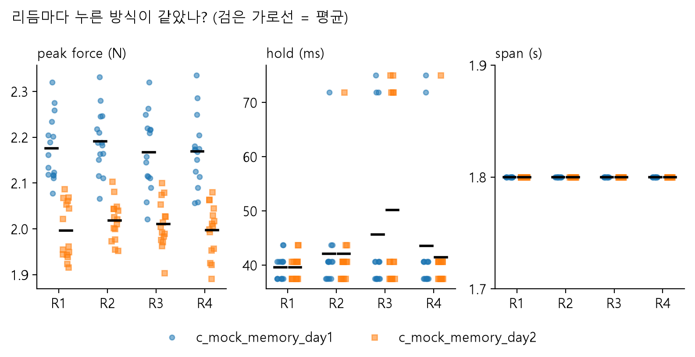
결과가 뜻하는 것. 같은 날 안에서 리듬 사이의 힘 차이는 0.02 N인데, 한 리듬 안의 흩어짐(SD)은 0.05–0.07 N입니다. 차이가 흩어짐보다 작으니 힘으로는 리듬을 가릴 수 없습니다. span도 모두 1.80초. 이 mock 기록에는 easy cue가 없습니다.
두 가지는 easy cue가 아닙니다.
- 첫째 날과 둘째 날의 힘 차이(2.18 vs 2.00 N): 리듬 사이가 아니라 날 사이의 차이입니다. easy cue는 같은 날 안에서 리듬끼리 견줍니다.
- hold의 72–75 ms 점들: 간격이 0.2초보다 조금 짧은 trial에서, hold를 재는 창(onset 뒤 0.2초)에 다음 누름이 들어와 그 누름의 hold가 길게 잡힌 것입니다. 측정하는 방법이 만든 값이지 servo가 오래 누른 것이 아닙니다. 그래서 0.2초 간격이 없는 R1에는 없습니다. 실물에서 이런 점이 보이면 같은 이유인지 먼저 확인합니다.
실습 4. 리듬 맞히기: 끝의 전류 몇 개만 보고 (p4_4_classify.py)
이제 본 질문입니다. 마지막 누름 뒤 전류를 한 번(또는 세 번)만 읽고 리듬을 맞히나? 맞히는 일은 readout이라는 작은 계산이 합니다. 연습용 trial을 보고 "이 높이면 R3" 같은 규칙을 만들고, 남겨 둔 시험용 trial로 채점합니다.
채점은 두 가지로 따로 합니다. ① 같은 날 기록을 연습용·시험용으로 나누기, ② 첫째 날로 연습하고 둘째 날로 시험하기. 둘의 점수가 크게 다를 수 있다는 것이 이 실습의 핵심입니다.
readout: 기록에서 뽑은 숫자 몇 개를 보고 "어느 리듬인가"를 답하는 작은 계산. 연습용(train) trial로 규칙을 만들고, 시험용(test) trial로 채점합니다.
feature: readout에 넣는 숫자. 아래 표의 다섯 종류를 따로따로 넣어 봅니다.
balanced accuracy: 맞힌 비율. 단, 네 리듬을 따로 채점해서 평균을 냅니다. 한 리듬만 계속 찍는 꼼수를 막습니다.
chance: 아무렇게나 찍을 때의 점수. 답이 넷이니 0.25. 0.25 근처 = 못 맞힌다, 1.00 = 다 맞힌다.
5-fold cross-validation: trial 60개를 다섯 묶음(12개씩)으로 나눠, 넷(48개)으로 연습하고 남은 하나로 시험 보기를 다섯 번 돌려 평균을 내는 방법. 연습한 문제로 시험을 보면 점수가 부풀기 때문입니다.
| feature | 무엇으로 맞히나 | 무엇을 흉내 내나 |
|---|---|---|
| end1 | 마지막 onset + 0.3초의 전류 1개 | 소자를 끝에서 한 번만 읽기 |
| end3 | +0.3 / 0.6 / 1.0초의 전류 3개 | 끝에서 세 번 읽기 |
| full | 처음부터 끝까지 1초에 50번 읽은 전류 전부 | 계속 읽는 보통 방식 |
| force_end3 | 같은 세 시점의 힘 3개 | 기억이 전혀 없는 센서를 끝에서 읽기 |
| force_full | 처음부터 끝까지의 힘 전부 | 기억이 전혀 없는 센서를 계속 읽기 |
force_end3·force_full은 비교 기준입니다. load cell의 힘은 "지금 힘"만 알려 주고 지난 누름을 기억하지 않으므로, "기억이 전혀 없는 센서라면 이 점수"를 보여 줍니다.
할 일 mylabs에 새 파일 p4_4_classify.py → 붙여 넣기 → Ctrl+S → ▷. 채점을 수백 번 하므로 약 20초 걸립니다. 그림 창이 두 개 뜹니다.
mylabs/p4_4_classify.py
# ============================================================
# P4 실습 4 · 리듬 맞히기: 끝의 전류 몇 개만 보고 맞히나
#
# 전체 과정:
#
# 실습 2의 기록 폴더 읽기
# ↓
# trial마다 feature(readout에 넣는 숫자) 다섯 종류 뽑기
# end1 마지막 onset + 0.3초의 전류 1개 ← 끝에서 한 번만 읽기
# end3 + 0.3 / 0.6 / 1.0초의 전류 3개 ← 끝에서 세 번 읽기
# full 처음부터 끝까지 50 Hz로 읽은 전류 전부 ← 계속 읽는 보통 방식
# force_end3 같은 세 시점의 '힘' ← 기억이 전혀 없는 센서를 끝에서 읽기
# force_full 힘 전부 ← 기억이 전혀 없는 센서를 계속 읽기
# ↓
# ① Same session : 같은 날 trial을 연습 4/5 · 시험 1/5로 나눠 다섯 번 (5-fold)
# ② New session : 첫째 날 전부로 연습 → 둘째 날로 시험 (그 반대도)
# ↓
# balanced accuracy 표 (찍기 = 0.25) + runs/c_report.md
# ↓
# 그림 1: readout이 보는 숫자 (end1) 그림 2: 점수 막대
# ============================================================
import sys
from pathlib import Path
# 공용 코드(python 폴더)를 불러오려고 경로를 잡는다.
CODE = Path(__file__).resolve().parent.parent # ion-projects-code 폴더
sys.path.insert(0, str(CODE / "python")) # 공용 코드 폴더를 찾을 수 있게
import numpy as np
import matplotlib.pyplot as plt
import c_analyze # 공용 코드: 실물 분석(c_analyze.py)과 같은 계산
from readout import fit_select, evaluate # 공용 코드: readout 연습·채점
from common import print_table # 공용 코드: TERMINAL에 표 찍기
# ============================================================
# 0. 그림 설정 — 건드리지 않아도 됩니다
# ============================================================
plt.rcParams.update({
"font.family": "Malgun Gothic", "axes.unicode_minus": False, "font.size": 11,
"legend.frameon": False, "axes.spines.top": False, "axes.spines.right": False,
})
# ============================================================
# 1. 바꿔 볼 수 있는 설정값 ← 여기를 바꿔 보세요
# ============================================================
MEMORY = True # 실습 2의 어느 기록을 쓸까. True: 흔적이 남는 소자, False: 기억 없는 소자
NORMALIZE = False # True: 전류를 trial마다 '누르기 전 baseline'으로 나눈 뒤 분석
# 분석할 기록 폴더 (runs 안). 실물 기록이면 이 줄을 예: RUNS = ["c_dev01_day1", "c_dev01_day2"]
DEVICE = "memory" if MEMORY else "nomem"
RUNS = ["c_mock_" + DEVICE + "_day1", "c_mock_" + DEVICE + "_day2"]
# ============================================================
# 2. 기록 읽기 + feature 뽑기 (공용 코드 c_analyze.load_session)
# ============================================================
c_analyze.NORMALIZE = NORMALIZE # 공용 코드에 normalize 여부 알려 주기
sessions = {name: c_analyze.load_session(str(CODE / "runs" / name)) for name in RUNS}
KEYS = ["end1", "end3", "full", "force_end3", "force_full"]
def table(rows, key):
"""trial마다 feature 숫자를 한 줄로 → (trial 수, 숫자 개수) 표"""
return np.array([r[key] for r in rows], float).reshape(len(rows), -1)
def answers(rows):
return np.array([r["y"] for r in rows])
# ============================================================
# 3. readout (공용 코드 readout.py)
# ============================================================
#
# readout = 숫자 몇 개 → "어느 리듬인가"를 답하는 작은 계산 (logistic regression)
# fit_select : 연습 trial의 정답을 보고 규칙(무게)을 정한다
# evaluate : 시험 trial에 규칙을 적용해 채점 → balanced accuracy
# balanced accuracy = 리듬 4개를 따로 채점해 평균. 찍기 = 0.25, 다 맞힘 = 1.00
# ============================================================
# ① Same session: 같은 날 안에서 5-fold cross-validation
same = {}
for name, rows in sessions.items():
same[name] = [c_analyze.within_cv(table(rows, k), answers(rows)) for k in KEYS] # (평균, SD)
# ② New session: 한 날 전부로 연습 → 다른 날로 시험
new = {}
for tr in RUNS:
for te in RUNS:
if tr != te:
scores = []
for k in KEYS:
model, _ = fit_select(table(sessions[tr], k), answers(sessions[tr]), n_splits=3)
scores.append(evaluate(model, table(sessions[te], k), answers(sessions[te]))["balanced_accuracy"])
new[f"{tr} -> {te}"] = scores
# ============================================================
# 4. 표 (TERMINAL) + c_report.md 저장
# ============================================================
print(f"sessions: {', '.join(f'{n} ({len(r)} trials)' for n, r in sessions.items())}")
print(f"current normalized by pre-press baseline: {'yes' if NORMALIZE else 'no'}")
print()
print("Same session, random split (5-fold cross-validation, balanced accuracy, chance 0.25)")
rows_same = [[n] + [f"{m:.2f} +/- {s:.2f}" for m, s in v] for n, v in same.items()]
print_table(["session"] + KEYS, rows_same, left=(0,))
rows_new = [[n] + [f"{a:.2f}" for a in v] for n, v in new.items()]
if rows_new:
print()
print("New session (train on one session -> test on another), balanced accuracy")
print_table(["train -> test"] + KEYS, rows_new, left=(0,))
md = ["# P4 analysis result", "", f"sessions: {', '.join(RUNS)} ",
f"current normalized by pre-press baseline: {'yes' if NORMALIZE else 'no'}", ""]
for title, cols, body in (("Same session (5-fold, balanced accuracy, chance 0.25)", ["session"] + KEYS, rows_same),
("New session (train -> test, balanced accuracy)", ["train -> test"] + KEYS, rows_new)):
if body:
md += [f"## {title}", "", "| " + " | ".join(cols) + " |", "|---" * len(cols) + "|"]
md += ["| " + " | ".join(r) + " |" for r in body] + [""]
(CODE / "runs" / "c_report.md").write_text("\n".join(md), encoding="utf-8")
print()
print("saved: runs/c_report.md")
# ============================================================
# 5. 그림 1: readout이 보는 숫자 — end1 (마지막 onset + 0.3초 전류)
# ============================================================
#
# 점 하나 = trial 하나. 리듬마다 점 무리가 따로 떨어져 있으면 → end1 하나로 맞힐 수 있다.
# 첫째 날과 둘째 날의 점 무리가 위아래로 통째로 어긋나 있으면 → 날을 바꾸면 규칙이 안 맞는다.
# ============================================================
fig, ax = plt.subplots(figsize=(8, 4.0))
unit, scale = ("baseline의 몇 배", 1) if NORMALIZE else ("current (nA)", 1e9)
for k, (name, rows) in enumerate(sessions.items()):
e1 = table(rows, "end1").ravel() * scale
yy = answers(rows)
for c in range(4):
xc = c + (k - (len(sessions) - 1) / 2) * 0.3
x = xc + np.random.default_rng(c).uniform(-0.07, 0.07, (yy == c).sum())
ax.plot(x, e1[yy == c], "os"[k % 2], ms=5, alpha=0.6, color=f"C{k}", label=name if c == 0 else None)
ax.set_xticks(range(4), ["R1 고르게", "R2 앞에 몰림", "R3 뒤에 몰림", "R4 가운데 쉼"])
ax.set_ylabel(f"end1: {unit}")
ax.set_title("readout이 보는 숫자: 마지막 onset + 0.3초의 전류 (점 하나 = trial 하나)", loc="left")
fig.tight_layout(rect=(0, 0.08, 1, 1))
fig.legend(*ax.get_legend_handles_labels(), loc="lower center", ncol=len(sessions))
# ============================================================
# 6. 그림 2: 점수 막대 — 같은 날(①) vs 다른 날(②)
# ============================================================
fig2, ax = plt.subplots(figsize=(8, 4.0))
x = np.arange(len(KEYS))
first = RUNS[0]
ax.bar(x - 0.2, [m for m, s in same[first]], 0.38, yerr=[s for m, s in same[first]], capsize=3,
color="#2b59c3", label=f"① Same session ({first} 안에서)")
if new:
pair = next(iter(new))
ax.bar(x + 0.2, new[pair], 0.38, color="#e0a458", label=f"② New session ({pair.replace(' -> ', ' → ')})")
ax.axhline(0.25, color="0.4", ls=":", lw=1.3, label="찍기(chance) 0.25")
ax.set_xticks(x, ["end1\n끝 1개", "end3\n끝 3개", "full\n계속 읽기", "force_end3\n힘 끝 3개", "force_full\n힘 전부"])
ax.set_ylim(0, 1.1)
ax.set_ylabel("balanced accuracy")
ax.set_title("리듬을 맞힌 점수 (1.00 = 다 맞힘)", loc="left")
fig2.tight_layout(rect=(0, 0.22, 1, 1))
fig2.legend(*ax.get_legend_handles_labels(), loc="lower center", ncol=1)
plt.show() # 그림 창 두 개가 뜹니다. 둘 다 닫아야 프로그램이 끝납니다.코드에서 볼 곳.
- 1번 상자:
MEMORY(실습 2의 어느 기록을 쓸까),NORMALIZE(바꿔 보기에서 씀),RUNS(폴더 이름 두 개). - 3번 상자 ①:
within_cv가 5-fold cross-validation입니다. 같은 날 60 trial 안에서 연습·시험을 다섯 번 바꿔 평균과 SD를 냅니다. - 3번 상자 ②:
fit_select가 첫째 날 trial 전부로 규칙을 만들고,evaluate가 그 규칙으로 둘째 날 trial을 채점합니다. - 4번 상자: 표를 TERMINAL에 찍고, 같은 내용을
runs\c_report.md(결과표)로도 저장합니다. VS Code EXPLORER에서 눌러 열 수 있습니다.
▷ 실행하면:
PS C:\Users\내이름\Desktop\ion-projects-code> & python mylabs/p4_4_classify.py
sessions: c_mock_memory_day1 (60 trials), c_mock_memory_day2 (60 trials)
current normalized by pre-press baseline: no
Same session, random split (5-fold cross-validation, balanced accuracy, chance 0.25)
session end1 end3 full force_end3 force_full
------------------ ------------- ------------- ------------- ------------- -------------
c_mock_memory_day1 1.00 +/- 0.00 0.98 +/- 0.03 1.00 +/- 0.00 0.25 +/- 0.00 0.98 +/- 0.03
c_mock_memory_day2 0.97 +/- 0.04 1.00 +/- 0.00 1.00 +/- 0.00 0.25 +/- 0.00 0.98 +/- 0.03
New session (train on one session -> test on another), balanced accuracy
train -> test end1 end3 full force_end3 force_full
---------------------------------------- ---- ---- ---- ---------- ----------
c_mock_memory_day1 -> c_mock_memory_day2 0.25 0.25 0.25 0.25 1.00
c_mock_memory_day2 -> c_mock_memory_day1 0.25 0.25 0.25 0.25 0.97
saved: runs/c_report.md
PS C:\Users\내이름\Desktop\ion-projects-code>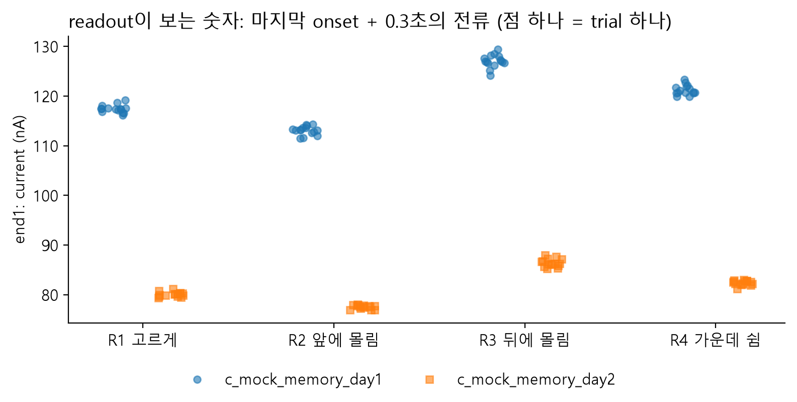
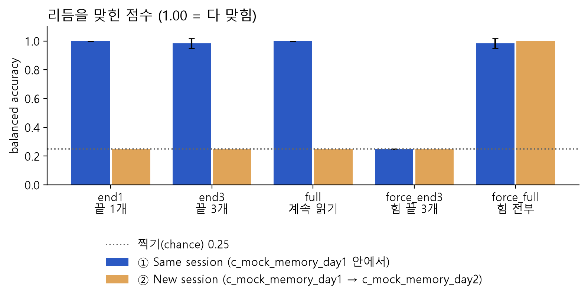
결과가 뜻하는 것.
- ① 같은 날:
end1이 1.00. 끝에서 한 번만 읽어도 리듬을 다 맞힙니다(mock).force_end3는 0.25입니다. 마지막 누름 0.3초 뒤에는 servo가 이미 올라가 있어 네 리듬 모두 힘이 0이기 때문입니다. 기억 없는 센서는 끝에서 읽으면 아무것도 모릅니다.force_full은 0.98. 계속 읽으면 기억이 없어도 "언제 솟았나"가 다 보입니다. 그래서 P4의 질문은 "맞히나"가 아니라 끝에서 몇 번만 읽어도 맞히나입니다. - ② 다른 날:
end1·end3·full이 모두 0.25로 무너집니다. 그림 6처럼 둘째 날 값이 통째로 약 30 % 낮아서, 첫째 날 규칙("117 nA 근처면 R1")이 둘째 날에는 어느 리듬에도 맞지 않습니다.force_full은 힘의 모양(언제 솟았나)으로 맞히므로 날이 바뀌어도 1.00입니다.
같은 날 안에서 1.00이 나와도, 다른 날에는 chance 수준일 수 있습니다. 그래서 결과표는 늘 ①과 ②를 따로 적습니다.
바꿔 보기 1. NORMALIZE = False를 True로 바꿔 ▷. ②의 0.25가 어떻게 될까요?
normalize (정규화): 전류를 그 trial의 누르기 전 baseline으로 나눈 값으로 바꾸는 것. baseline 100 nA에서 130 nA가 되면 1.3, baseline 70 nA에서 91 nA가 되어도 1.3. 날마다 baseline이 달라도 "baseline의 몇 배"는 비슷할 것이라는 생각입니다. 키가 다른 두 사람의 점프를 "자기 키의 몇 배"로 견주는 것과 같습니다.
②의 end1·end3가 0.25 → 0.65–0.73으로 일부 회복되고, full은 1.00으로 다 회복됩니다. ①은 거의 그대로입니다.
PS C:\Users\내이름\Desktop\ion-projects-code> & python mylabs/p4_4_classify.py
sessions: c_mock_memory_day1 (60 trials), c_mock_memory_day2 (60 trials)
current normalized by pre-press baseline: yes
Same session, random split (5-fold cross-validation, balanced accuracy, chance 0.25)
session end1 end3 full force_end3 force_full
------------------ ------------- ------------- ------------- ------------- -------------
c_mock_memory_day1 1.00 +/- 0.00 0.98 +/- 0.03 1.00 +/- 0.00 0.25 +/- 0.00 0.98 +/- 0.03
c_mock_memory_day2 0.98 +/- 0.03 1.00 +/- 0.00 1.00 +/- 0.00 0.25 +/- 0.00 0.98 +/- 0.03
New session (train on one session -> test on another), balanced accuracy
train -> test end1 end3 full force_end3 force_full
---------------------------------------- ---- ---- ---- ---------- ----------
c_mock_memory_day1 -> c_mock_memory_day2 0.70 0.65 1.00 0.25 1.00
c_mock_memory_day2 -> c_mock_memory_day1 0.73 0.73 1.00 0.25 0.97
saved: runs/c_report.md
PS C:\Users\내이름\Desktop\ion-projects-code>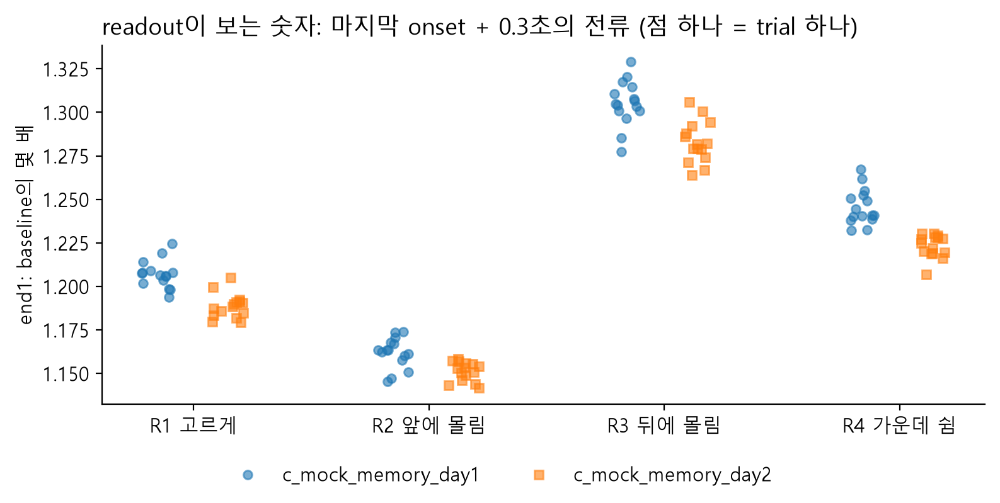
완전히 회복되지 않는 이유: 둘째 날은 baseline뿐 아니라 누르는 힘도 약 8 % 약해서(TERMINAL의 force x1.09 → x1.01) 흔적의 크기 자체가 다릅니다. 나눗셈으로는 baseline 차이만 지워집니다. 실제 실험에서도 날마다 baseline이 흔들리면(drift) 같은 일이 생깁니다.
drift: 아무것도 안 했는데 baseline이 시간에 따라 흘러가듯 바뀌는 것. 어제와 오늘 같은 소자의 baseline이 다르면 drift를 의심합니다.
바꿔 보기 2. NORMALIZE를 False로 되돌리고, MEMORY = False로 바꿔 ▷(실습 2의 바꿔 보기에서 만든 기억 없는 소자의 기록을 씁니다).
같은 날 end1이 0.28과 0.17, end3가 0.30과 0.20으로 찍기 수준입니다. full은 0.97–0.98로 여전히 높습니다. 기억이 없으면 끝의 전류가 네 리듬 모두 baseline이라(그림 4) 끝에서 읽어서는 모르고, 계속 읽어야만 압니다. 0.17이 0.25보다 낮은 것은 시험 문제가 12개뿐이라 생기는 우연의 흔들림입니다(± 0.07).
PS C:\Users\내이름\Desktop\ion-projects-code> & python mylabs/p4_4_classify.py
sessions: c_mock_nomem_day1 (60 trials), c_mock_nomem_day2 (60 trials)
current normalized by pre-press baseline: no
Same session, random split (5-fold cross-validation, balanced accuracy, chance 0.25)
session end1 end3 full force_end3 force_full
----------------- ------------- ------------- ------------- ------------- -------------
c_mock_nomem_day1 0.28 +/- 0.07 0.30 +/- 0.08 0.97 +/- 0.04 0.25 +/- 0.00 0.98 +/- 0.03
c_mock_nomem_day2 0.17 +/- 0.07 0.20 +/- 0.08 0.98 +/- 0.03 0.25 +/- 0.00 0.98 +/- 0.03
New session (train on one session -> test on another), balanced accuracy
train -> test end1 end3 full force_end3 force_full
-------------------------------------- ---- ---- ---- ---------- ----------
c_mock_nomem_day1 -> c_mock_nomem_day2 0.25 0.25 0.25 0.25 1.00
c_mock_nomem_day2 -> c_mock_nomem_day1 0.25 0.25 0.25 0.25 0.97
saved: runs/c_report.md
PS C:\Users\내이름\Desktop\ion-projects-code>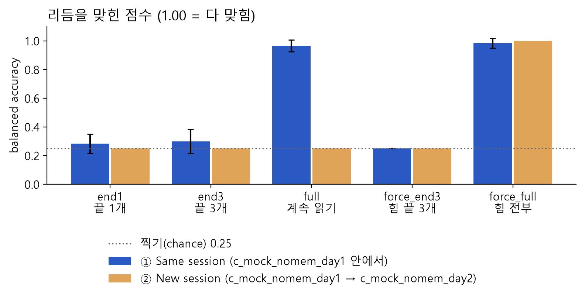
end1·end3 막대만 찍기 수준으로 내려앉았습니다.
바꿔 보기 3. MEMORY = True로 되돌립니다. 이번에는 실습 2를 열어 TAU = 0.6을 0.1(아주 빨리 잊는 소자)로 바꿔 ▷ → 다시 실습 4를 ▷. end1 점수는?
실습 2의 둘째 그림 창에서 네 곡선이 끝에서 거의 겹칩니다. 흔적이 0.1초 만에 대부분 빠져, 0.3초 뒤에는 거의 남지 않기 때문입니다.
PS C:\Users\내이름\Desktop\ion-projects-code> & python mylabs/p4_2_mock.py
============================================================
mock records: memory device, TAU = 0.1 s, 60 trials per session
============================================================
saved: runs/c_mock_memory_day1 (baseline x0.97, force x1.09)
saved: runs/c_mock_memory_day2 (baseline x0.67, force x1.01)
current at last onset + 0.3 s (nA), mean of trials per rhythm
rhythm c_mock_memory_day1 c_mock_memory_day2
R1 98.8 68.3
R2 98.9 68.4
R3 99.0 68.5
R4 99.1 68.4
PS C:\Users\내이름\Desktop\ion-projects-code>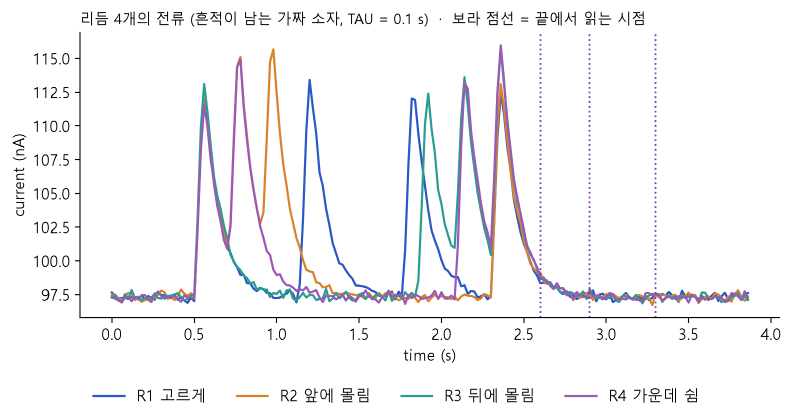
이어서 실습 4를 ▷ 하면 같은 날 end1이 1.00에서 약 0.35로 떨어집니다.
PS C:\Users\내이름\Desktop\ion-projects-code> & python mylabs/p4_4_classify.py
sessions: c_mock_memory_day1 (60 trials), c_mock_memory_day2 (60 trials)
current normalized by pre-press baseline: no
Same session, random split (5-fold cross-validation, balanced accuracy, chance 0.25)
session end1 end3 full force_end3 force_full
------------------ ------------- ------------- ------------- ------------- -------------
c_mock_memory_day1 0.35 +/- 0.10 0.37 +/- 0.08 1.00 +/- 0.00 0.25 +/- 0.00 0.98 +/- 0.03
c_mock_memory_day2 0.32 +/- 0.12 0.28 +/- 0.08 1.00 +/- 0.00 0.25 +/- 0.00 0.98 +/- 0.03
New session (train on one session -> test on another), balanced accuracy
train -> test end1 end3 full force_end3 force_full
---------------------------------------- ---- ---- ---- ---------- ----------
c_mock_memory_day1 -> c_mock_memory_day2 0.25 0.25 0.25 0.25 1.00
c_mock_memory_day2 -> c_mock_memory_day1 0.25 0.25 0.25 0.25 0.97
saved: runs/c_report.md
PS C:\Users\내이름\Desktop\ion-projects-code>반대로 TAU를 3(아주 오래 기억)으로 하면 같은 날 end1은 약 0.65–0.73입니다. 흔적이 너무 오래 남으면 네 리듬의 흔적이 다 쌓여 비슷해지기 때문입니다. 너무 짧아도, 너무 길어도 끝에서 읽는 점수가 떨어집니다. P1에서 본 산 모양과 같은 이야기입니다.
다 봤으면 실습 2를 TAU = 0.6으로 되돌리고 ▷ 해서 기록을 원래대로 만들어 둡니다.
관찰 적기 (완료 조건)
할 일 연구 노트나 메모장에 아래 두 질문의 답을 먼저 내 말로 적습니다. 다 적은 뒤에 "정답 보기"를 눌러 비교합니다.
질문 1. 흔적이 남는 가짜 소자와 기억 없는 가짜 소자의 같은 날 end1 점수는 각각 몇인가요? 왜 이렇게 다를까요? 두 소자의 full 점수는 어떤가요?
end1: 흔적이 남는 소자 1.00, 기억 없는 소자 0.28(첫째 날). 기억이 없으면 전류가 지금 힘에만 비례합니다. 마지막 누름 0.3초 뒤에는 힘이 0이니 전류도 baseline으로 돌아가 있고, 네 리듬의 end1이 같아집니다. 흔적이 남는 소자는 앞 누름들의 물이 양동이에 남아 있어 리듬마다 end1이 다릅니다.
full은 둘 다 높습니다(1.00, 0.97). 계속 읽으면 "언제 전류가 솟았나"가 다 보이므로 기억이 없어도 리듬을 압니다. 그래서 P4가 보려는 차이는 full이 아니라 end1·end3에서 나옵니다.
질문 2. 같은 날(①)에는 1.00이던 end1이 다른 날(②)에는 왜 0.25가 될까요? 그런데 force_full은 왜 그대로일까요?
둘째 날은 baseline이 첫째 날보다 약 30 % 낮아서, 전류 값이 통째로 내려갔습니다(그림 6). 첫째 날 규칙은 전류의 절대 높이로 만들어졌으므로 둘째 날에는 기준이 전부 어긋나 찍기 수준이 됩니다. force_full은 힘이 언제 솟았나로 맞히므로, 힘의 크기가 날마다 조금 달라도 영향을 받지 않습니다.
관찰할 점.
- 끝에서 1개만 읽어도 맞힙니다(mock). 흔적이 남는 가짜 소자는
end1이 1.00, 기억이 없으면 0.28. 이것이 P4가 진짜 소자에서 보고 싶은 차이입니다. - 같은 날 점수와 다른 날 점수는 다릅니다. baseline이 흔들리면 같은 날 1.00이 다른 날 0.25가 됩니다. normalize로 일부 회복됩니다. 진짜 실험에서 가장 흔한 함정입니다.
- TAU가 맞아야 합니다. 흔적이 너무 빨리 사라져도, 너무 오래 남아도 끝에서 읽는 점수가 떨어집니다.
다음 단계 조건. 관찰 두 질문에 답을 적었으면 됩니다. 압력용 소자와 소스미터가 있으면 P4.0으로, 아직 없으면 P4.1(소자 구조)을 읽고 만들 준비를 합니다.
P4.0. 눌러서 반응이 있는가
메모리폼 베개는 눌렀다 떼면 자국이 천천히 돌아오고, 용수철 저울은 손을 떼는 순간 바늘이 0으로 돌아갑니다. 내 소자는 어느 쪽에 가까울까요? 그 전에, 눌렀을 때 전류가 바뀌기는 할까요?
P4.0은 이것을 가장 단순한 방법으로 봅니다. servo나 load cell을 사기 전에, 작은 추를 손으로 올렸다 내리고 그동안 소자의 전류를 계속 봅니다. 반응이 없어도 결과입니다.
- 준비물: 소스미터(P2.0R에서 연결해 둔 것), 악어 클립 2개, 압력용 소자 1개와 control(절연 탄성체 막) 1개, 작은 추 몇 개(20·50·100 g), 실리콘 패드(손톱만 한 조각), 스톱워치(휴대폰), 휴대폰 거치대. 압력용 소자가 아직 없으면 위의 PC만으로 분석 연습부터 합니다.
- 걸리는 시간: 1–2시간.
- 끝나면 얻는 것: 추를 올렸다 내릴 때의 전류–시간 기록 (소자와 control).
- 오늘의 완료 기준: 같은 추로 3번 반복한 기록이 남으면 끝입니다. 반응이 없어도 결과입니다.
- 남길 기록: 추 무게, 올린 시각·내린 시각, read voltage, 온도·습도, 소자 구조(평평/요철).
소스미터 (SMU = source measure unit): 전압을 걸면서 동시에 전류를 재는 장비. 건전지와 전류계를 한 상자에 넣은 것이라고 생각하면 됩니다.
전류–시간 기록: 시간에 따라 전류가 어떻게 변했는지 적은 표나 그래프. 예: 0초 100 nA, 10초(추 올림) 130 nA, 20초(추 내림) 125 nA, 50초 102 nA. 이 단계의 결과물입니다.
control (대조군): "소자 때문"인지 가리려고 같은 방법으로 같이 재는 다른 물건. 여기서는 이온 고분자 대신 절연 탄성체(예: PDMS 막)를 넣은 것. 아래 control 절에 자세히.
지금 코드 묶음에는 일정 전압을 걸어 둔 채 전류를 계속 파일로 저장하는 명령이 없습니다. 그래서 P4.0은 소스미터 앞면 표시를 보고 기록합니다. 가장 쉬운 방법은 휴대폰으로 소스미터 표시 창과 스톱워치를 한 화면에 동영상으로 찍어 두고, 나중에 영상을 멈춰 가며 1–2초 간격으로 옮겨 적는 것입니다.
기록 표 준비 (5분)
할 일 메모장이나 엑셀에 아래 표를 만들어 둡니다. 한 번 올렸다 내릴 때마다 한 줄씩 채웁니다.
| 물건 | 추 [g] | 회차 | 올리기 전 전류 | 올린 시각 [s] | 올린 동안 전류 | 내린 시각 [s] | 내리고 30초 뒤 전류 | 온도·습도 |
|---|---|---|---|---|---|---|---|---|
| 소자 p01 | 20 | 1 | ||||||
| 소자 p01 | 20 | 2 | ||||||
| control | 20 | 1 |
시각은 스톱워치를 켠 순간을 0초로 셉니다. 영상에서 옮겨 적는 전류–시간 표(시각 [s], 전류 [A] 두 열)는 회차마다 따로 둡니다.
소자를 소스미터에 연결 (출력은 꺼 둔 채)
할 일
- 소스미터 앞면 OUTPUT이 꺼져 있는지(출력 표시등이 꺼짐) 먼저 봅니다.
- 아래 표대로 악어 클립을 겁니다.
| 소스미터 단자 | → | 소자 |
|---|---|---|
| HI | 악어 클립 | 위 전극(휘어지는 ITO-PET 쪽, 전극이 밖으로 나온 띠) |
| LO | 악어 클립 | 아래 전극(ITO 유리 쪽) |
HI / LO: 소스미터 앞면의 두 단자. 건전지의 + 쪽과 − 쪽처럼, HI가 높은 전위 쪽입니다.
- 두 클립이 서로 닿지 않는지, 클립이 소자의 누를 자리(가운데)를 가리지 않는지 봅니다.
전극이 어느 쪽인지 헷갈리면 P2.1의 극성 약속을 따릅니다. 어떻게 걸었는지 기록에 적어 두면, 반대로 걸었어도 나중에 해석할 수 있습니다.
read voltage 걸고 안정될 때까지 기다리기 (5–10분)
전류를 보려면 소자에 작은 전압을 계속 걸어 두어야 합니다. 수도꼭지를 아주 조금 틀어 두고 물줄기가 굵어지는지 보는 것과 같습니다. 꼭지를 너무 크게 틀면(전압이 크면) 그 자체가 소자를 바꿔 버리므로 작게 겁니다.
read voltage: 전류를 재려고 소자에 걸어 두는 작은 일정 전압. 예: 0.1 V. P2.1에서 I-V 그래프가 거의 직선인 구간의 값을 씁니다.
compliance: "전류가 이 값을 넘지 않게 하라"는 소스미터 설정. 예: 10 µA. 소자를 지키는 울타리입니다.
할 일
- 소스미터 앞면에서 전압을 내고 전류를 재는 모드를 고릅니다(Keithley 2400이면 SOURCE 쪽 V 키, MEAS 쪽 I 키) [2400 설명서로 확인].
- 전압 값을 read voltage로 넣습니다. P2.1에서 거의 직선이었던 구간의 작은 값(예: 0.1 V).
- compliance(전류 제한)를 이번 실험의 값으로 넣습니다.
- OUTPUT을 켭니다. 표시 창에 전류가 나옵니다.
- 아무것도 올리지 않은 채 5분쯤 둡니다. 전류 끝자리가 한 방향으로 계속 흘러가면(drift) 더 기다립니다.
전류가 0이거나 범위를 넘음 → 클립이 전극에 닿았는지, 두 클립이 서로 닿지 않았는지 확인. 10분이 지나도 전류가 계속 한 방향으로 흘러감 → 그 흐름 자체를 기록하고 시작합니다(올렸을 때의 변화를 흐름과 견줘야 합니다).
추 올렸다 내리기 (한 회차 약 1분)
할 일
- 휴대폰을 거치대에 세워 소스미터 표시 창과 스톱워치가 함께 보이게 하고 동영상 녹화를 시작합니다.
- 스톱워치를 켭니다(0초).
- 소자의 누를 자리에 실리콘 패드를 먼저 놓습니다.
- 10초쯤 그대로 두어 올리기 전 전류를 봅니다.
- 추(먼저 20 g)를 패드 위 같은 자리에 살짝 올리고, 올린 시각을 말하거나 적습니다.
- 10초 두었다가 추를 들어 내리고, 내린 시각을 적습니다. 패드는 그대로 둡니다.
- 그 뒤 30초 동안 전류가 어떻게 되는지 계속 찍습니다.
- 녹화를 멈추고, 기록 표 한 줄을 채웁니다.
실리콘 패드는 추가 닿는 면적을 일정하게 하려는 것입니다. 추를 바로 올리면 추마다 바닥 모양이 달라 면적이 달라지고, 면적이 다르면 힘이 같아도 결과가 달라질 수 있습니다.
같은 추로 3번, 다른 추로도
할 일 같은 추(20 g)로 추 올렸다 내리기를 3번 반복합니다. 회차 사이에는 전류가 올리기 전 값으로 돌아올 때까지(또는 1분) 기다립니다. 그다음 50 g, 100 g으로 같은 동작을 3번씩 합니다. 매번 추 무게·올린 시각·내린 시각을 적습니다.
이 단계의 결과물은 전류–시간 기록입니다. 영상에서 옮겨 적은 표든, 화면을 보며 손으로 적은 표든 괜찮습니다. 온도·습도도 같이 적습니다.
control로 똑같이
할 일
- 소스미터 OUTPUT을 끕니다.
- 소자에서 클립을 빼고, 절연 탄성체 막(control)을 같은 자리에 놓아 같은 방법(HI → 위 전극, LO → 아래 전극)으로 연결합니다.
- OUTPUT을 켜고, 추 올렸다 내리기와 3번 반복을 똑같이 합니다. 추, 패드, 시간, read voltage를 모두 같게 합니다.
- 다 끝나면 OUTPUT을 끄고 클립을 뺍니다.
추를 올릴 때 전극 사이 간격이 줄거나 장치가 흔들리면, 이온과 관계없이 전류가 바뀔 수 있습니다. control에서도 같은 변화가 보이면 그것은 소자의 성질이 아닙니다.
관찰 적기 (완료 조건)
예상할 수 있는 결과는 셋입니다. 셋 다 결과입니다.
- 전류 변화가 없음. 구조를 바꿔야 할 수 있습니다(아래 소자 구조의 요철 계면, 더 얇은 위 전극).
- 올릴 때 바뀌고, 내리면 곧 돌아옴. 누름에는 반응하지만 흔적이 짧습니다. 용수철 저울처럼 보통 센서에 가깝습니다.
- 내린 뒤에도 천천히 돌아옴. 메모리폼처럼 흔적이 남습니다. P4.5의 리듬 과제로 갈 만합니다. 단, control도 천천히 돌아오면 고분자의 viscoelasticity일 수 있습니다.
할 일 연구 노트에 먼저 내 말로 적은 뒤 "정답 보기"를 누릅니다.
질문. 내 소자와 control은 각각 세 경우 중 어디에 해당하나요? 판단에 쓴 숫자(올리기 전 전류, 올린 동안 전류, 내리고 30초 뒤 전류)를 함께 적습니다.
기록마다 답이 다르므로 판단하는 순서와 답의 예를 둡니다.
- 반응이 있나: 올린 동안의 변화가, 올리기 전 10초 동안의 흔들림(drift)보다 뚜렷이 큰가. 흔들림과 비슷하면 "변화 없음"입니다.
- 흔적이 남나: 내리고 30초 뒤 전류가 올리기 전 값으로 돌아왔나, 몇 초 걸렸나. 바로 돌아오면 흔적이 짧고, 30초 뒤에도 덜 돌아왔으면 흔적이 남습니다.
- control도 같은가: control도 같은 크기로 같은 모양이면, 그 변화는 이온이 아니라 장치·전극·간격 때문일 수 있습니다.
답의 예(숫자는 예): "20 g에서 소자는 100 → 130 nA로 늘고, 내린 뒤 약 8초에 걸쳐 102 nA로 돌아옴(3번 모두 비슷). control은 100 → 101 nA로 흔들림 수준. → 소자는 '천천히 돌아옴', control은 '변화 없음'. P4.5로 갈 만함."
다음 단계 조건. 같은 추로 3번 반복한 기록(소자·control)이 남으면 P4.0은 끝입니다.
P4.1. 소자 구조 (가설)
스펀지 두 장을 맞대고 눌러 보는 장면을 떠올려 보세요. 표면이 매끈하면 처음부터 거의 다 닿아 있어서, 더 눌러도 닿는 면적이 별로 안 늘어납니다. 표면이 울퉁불퉁하면 처음에는 볼록한 끝만 닿다가, 누를수록 닿는 곳이 늘어납니다. 닿는 면적이 늘면 이온이 오갈 길이 넓어져 전류가 바뀔 것이라는 생각입니다.
P2·P3의 소자는 이런 고려 없이 만들어서, 눌러도 전류가 바뀌라는 법이 없습니다. 그래서 누름에 반응하도록 새 구조를 만듭니다. 아래 구조는 아직 실물로 확인되지 않은 가설입니다.
누름 ↓ (실리콘 팁) ┌──────────────────────┐ ITO-PET (유연 전극, ITO 면이 아래) │ 고정 음전하 층 (EMIMSPA) │ │ ~~~~~ 요철 접합면 ~~~~~ │ ← 눌리면 접촉 면적이 바뀔 것이라는 가설 │ 고정 양전하 층 (METMAT·X) │ └──────────────────────┘ ITO 유리 (단단한 바닥)
ITO (indium tin oxide): 투명하면서 전기가 통하는 얇은 막. 휴대폰 터치 화면에도 쓰입니다. ITO-PET는 휘어지는 플라스틱 필름 위에 ITO를 입힌 것, ITO 유리는 유리 위에 입힌 것입니다.
고정 음전하 층 / 고정 양전하 층: 고분자 사슬에 (−) 또는 (+) 전하가 붙박이로 달린 이온 고분자 층. 두 층을 맞대면 접합면이 생깁니다(P2의 소자와 같은 짝).
textured interface (요철 계면): 두 층이 만나는 면을 일부러 울퉁불퉁하게 만든 것. 위 스펀지 비유의 울퉁불퉁한 표면입니다.
- 평평한 계면과 요철 계면을 둘 다 만듭니다. 요철은 사포를 PDMS로 본뜬 틀(mold) 위에서 고분자를 굳혀 만듭니다. 둘을 같은 방법으로 재서 비교합니다.
- 활성 면적(실제로 전류가 흐르는 부분)은 구멍 뚫은 절연 테이프로 고정합니다. 구멍은 누르는 팁보다 약간 크게 합니다.
- 흡습성(물을 빨아들이는 성질)은 이온 종류(예: X⁻가 FSI⁻인지 TFSI⁻인지)에 따라 다를 수 있습니다. 소재 정보를 확인한 뒤 해석합니다.
PDMS: 투명한 실리콘 고무. 사포 무늬를 본뜨는 틀(mold)로도 쓰고, control 막으로도 씁니다.
PDMS는 물방울은 튕기지만 수증기는 꽤 잘 통과시킵니다. 그래서 밀봉했다고 습도를 막는다고 가정하지 않습니다. 대신 ① 측정 상자의 온도·습도를 기록하고, ② 누르지 않은 채 습도만 바꿔 전류가 얼마나 변하는지(humidity sensitivity)를 따로 재서 압력 응답과 비교합니다. 수증기 장벽(barrier) 성능이 꼭 필요하면 투과 시험을 별도로 합니다.
encapsulation (밀봉): 소자를 덮어 보호하는 것. 긁힘·눌림을 막는 기계적 보호이고, 습도를 막는다는 뜻이 아닙니다(위 경고).
humidity sensitivity (습도 민감도): 누르지 않고 습도만 바꿨을 때 전류가 얼마나 변하는가. 예를 들어 습도 40 → 60 %에서 전류가 20 % 변하는데 누름으로는 5 %만 변한다면, 누름 응답은 습도 변화에 묻힙니다.
P4.2. control — 무엇과 비교해야 "이온 때문"이라고 말할 수 있나
새 약이 효과가 있는지 보려면, 같은 모양의 가짜 약을 먹은 사람들과 비교합니다. 가짜 약을 먹고도 낫는 사람이 많다면, 진짜 약 때문에 나은 것이 아닐 수 있기 때문입니다.
P4도 같습니다. 눌러서 전류가 바뀌었다고 해도, 그 이유가 이온 고분자의 기억인지, 다른 흔한 이유인지 모릅니다. 이유 하나씩을 없앤 물건을 같이 재면 가려낼 수 있습니다. 각 줄이 "이 control이 무엇을 가려 주나"입니다.
| control | 무엇을 가르나 |
|---|---|
| 이온 고분자 대신 같은 두께의 절연 탄성체(예: PDMS 막) | 전극 간격·capacitance 변화, 장치 진동만으로 생기는 신호 |
| 한 층만 있는 소자 (위·아래 같은 고분자) | 접합이 필요한지, 한 층의 변형·전극 계면만으로 되는지 |
| 같은 소자, read voltage 0 근처 | 누름이 스스로 전압을 만드는지(기계–전기 변환) |
| 상용 비교 센서 FSR(force sensing resistor, 예: Interlink FSR 402) | 상용 센서도 이력·drift가 있다고 제조사가 밝힙니다. 그래서 "기억 없는 센서"가 아니라 비교용 상용 센서로 쓰고, 실제 회복 응답을 같은 장치로 잽니다 |
| ideal memoryless model (소프트웨어) | load cell로 잰 힘 자체를 "기억 없는 센서 출력"으로 보고 같은 feature·분류를 적용 → 기억이 전혀 없을 때의 baseline |
capacitance (정전용량): 두 전극 사이에 전하를 저장하는 능력. 전극 간격이 줄면 커지고, 그 순간 전류가 잠깐 흐릅니다. 이온이 없어도 생기는 신호라서 절연 탄성체 control로 가려냅니다.
FSR (force sensing resistor): 누르면 저항이 줄어드는 상용 압력 센서. 값싸고 흔합니다. 상용이라도 이력(지난 누름의 영향)과 drift가 있다고 제조사가 밝힙니다.
ideal memoryless model (이상적 무기억 모델): 소프트웨어 안의 비교 기준. load cell이 잰 힘 자체를 "기억이 전혀 없는 센서의 출력"으로 보고 같은 계산을 합니다. 결과표의 force_end3·force_full이 이것입니다.
P4.0부터 P4.5까지 소자에 하는 측정은 control에도 똑같이 합니다. control 없이 소자만 잰 결과는 "이온 때문"이라고 말할 수 없습니다.
P4.3. 자극 장치: servo로 누르고 load cell로 힘을 잰다
리듬 실험은 수백 번을 같은 힘, 같은 시각으로 눌러야 합니다. 사람 손으로 240번을 똑같이 두드리기는 불가능합니다. 박자를 정확히 지켜 주는 메트로놈처럼, 작은 모터(servo)가 정해진 시각에 정해진 깊이로 누르게 합니다. 그리고 servo가 "정말 같은 힘으로 눌렀는지"는 소자 아래에 둔 저울(load cell)이 확인합니다. board(NU40 DK)가 둘을 조종합니다.
servo: 명령한 각도로 팔을 돌리는 작은 모터. 예: "60°" → 팔이 올라감, "42°" → 팔이 내려가 소자에 닿음. 팔 끝에 실리콘 팁을 달아 소자를 누릅니다.
load cell: 힘을 재는 부품. 전자저울 안에 든 것과 같습니다. 힘이 걸리면 아주 작은 전압이 나옵니다.
HX711: load cell의 아주 작은 전압을 숫자로 바꿔 board에 보내 주는 module(작은 기판). SPS(samples per second)는 1초에 몇 번 숫자를 만드는지(10 또는 80)입니다. 80 SPS면 12.5 ms마다 한 번.
tapper: "두드리는 장치". servo + load cell + HX711 + board + C_tapper firmware를 합쳐 부르는 이름.
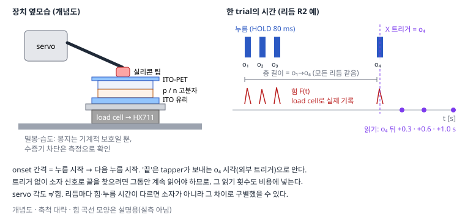
부품
| 품목 | 추천 | 기준 |
|---|---|---|
| servo | MG996R 등 금속 기어 | 5 V 동작, board 3.3 V로 전원 공급 금지 (순간 1 A 이상) |
| servo 전원 | 5 V 2 A 이상 어댑터 + DC 잭–나사 단자 변환 | GND를 board(NU40 DK) GND와 연결 |
| load cell + HX711 module | 1 kg 막대형 | HX711은 기본 10 SPS인 module이 많고 RATE 핀으로 80 SPS. 10 SPS면 80 ms 누름의 최대 힘을 놓칠 수 있음 |
| 보정 추 | 20·50·100·200 g | 여러 개로 직선성 확인 |
| 거치대·실리콘 팁 | 아크릴판·고무발 | load cell 위에 소자, 위에서 팁이 누름 |
| breadboard·jumper | 작은 breadboard 1개, 수–수·수–암 jumper 몇 가닥 | servo 전원 줄을 나누는 데 씀 |
GND (ground): 전기 회로의 공통 기준(0 V) 선. 서로 다른 전원을 쓰는 부품끼리도 GND는 이어 줘야 신호를 알아듣습니다.
jumper · breadboard: 부품을 납땜 없이 잇는 선(jumper)과 구멍 판(breadboard). breadboard 양옆의 긴 줄(빨간 + 줄, 파란 − 줄)은 전원 줄입니다.
servo는 움직이는 순간 1 A 넘게 끌어갑니다. board의 3.3 V 핀은 그만큼을 줄 수 없어서 board가 꺼지거나 재부팅되고, 망가질 수도 있습니다. servo의 빨간 선은 반드시 따로 둔 5 V 어댑터에, 검은 선(GND)은 어댑터 (−)와 board GND 둘 다에 연결합니다.
연결
선 세 묶음을 꽂습니다. servo 3선, HX711과 board 4선, load cell과 HX711 4선. board의 핀 이름은 P1.05처럼 board에 인쇄되어 있습니다. firmware 안에서는 P1.xx가 32 + xx 번(37·38·39)으로 적혀 있습니다.
꽂는 순서와 전원 순서 (먼저 읽기)
할 일 선을 꽂는 동안에는 모든 전원을 뺀 상태입니다. 아래 순서대로 합니다.
| 순서 | 할 일 |
|---|---|
| 1 | board의 USB를 PC에서 뺍니다. 5 V 어댑터도 콘센트에서 뺍니다 |
| 2 | load cell 4선 → HX711 (아래 카드) |
| 3 | HX711 4선 → board (아래 카드) |
| 4 | servo 3선 → breadboard 전원 줄·board (아래 카드) |
| 5 | 표를 보며 한 줄씩 다시 확인. 특히 servo 빨간 선이 board에 꽂히지 않았는지 |
| 6 | servo 팔을 손으로 위쪽으로 돌려 두고, 팁 아래에 소자가 아직 없게 둡니다 |
| 7 | board USB를 PC에 꽂습니다 |
| 8 | 5 V 어댑터를 콘센트에 꽂습니다. servo가 위 자세(60°)로 한 번 움직일 수 있습니다 |
끌 때는 거꾸로: 5 V 어댑터를 먼저 빼고, 그다음 USB를 뺍니다.
load cell과 HX711 4선
할 일 load cell에서 나오는 선 4개를 HX711의 load cell 쪽 단자에 꽂습니다.
| load cell 선(흔한 색) | → | HX711 단자 |
|---|---|---|
| 빨강 | → | E+ |
| 검정 | → | E− |
| 흰색 | → | A− |
| 초록 | → | A+ |
선 색은 제품마다 다를 수 있습니다. 반드시 load cell 설명서로 확인합니다. 힘을 주었는데 숫자가 거꾸로(작아짐) 움직이면 A+와 A−를 바꿔 꽂습니다.
HX711 module과 board 4선
할 일 HX711 module의 board 쪽 단자 4개를 jumper로 꽂습니다.
| HX711 단자 | → | board |
|---|---|---|
| VCC | → | 3.3 V |
| GND | → | GND |
| DT (DOUT) | → | P1.06 |
| SCK (PD_SCK) | → | P1.07 |
HX711은 전류를 거의 안 쓰므로 board 3.3 V로 됩니다(servo와 다릅니다).
servo 3선
할 일 5 V 어댑터의 (+)/(−)를 DC 잭–나사 단자로 받아 breadboard 전원 줄에 먼저 잇고, servo 선을 아래처럼 꽂습니다.
| 어디서 | → | 어디로 |
|---|---|---|
| 5 V 어댑터 (+) | → | breadboard 빨간 + 줄 |
| 5 V 어댑터 (−) | → | breadboard 파란 − 줄 |
| servo 전원(빨강) | → | breadboard 빨간 + 줄 (= 외부 5 V) |
| servo GND(검정 또는 갈색) | → | breadboard 파란 − 줄 |
| breadboard 파란 − 줄 | → | board GND (jumper 한 가닥. 이것이 "GND 둘 다 연결") |
| servo 신호(주황 또는 노랑) | → | board P1.05 |
servo가 떨거나 board가 재부팅됨 → 빨간 선이 board 3.3 V에 꽂힌 것. 바로 뽑고 어댑터 쪽으로 옮깁니다. servo가 전혀 안 움직임 → − 줄과 board GND를 잇는 jumper가 빠졌는지 확인.
거치대에 올리기
할 일 load cell 막대의 한쪽 끝을 아크릴판에 고정하고, 다른 쪽 끝 위에 소자를 놓습니다. servo는 팔 끝의 실리콘 팁이 소자 바로 위에 오도록 고정합니다. 팁이 내려왔을 때 소자의 활성 면적(테이프 구멍) 안에 닿아야 합니다. 어느 쪽을 고정하고 어느 쪽으로 향하게 하는지는 바로 아래 조립에 있습니다.
조립: 표로는 안 보이는 방향과 힘의 길
배선 표는 "어느 선을 어디에"만 알려 줍니다. 누르는 장치에서는 어느 쪽을 단단히 고정하고, 어느 쪽이 움직이게 두는지가 더 중요합니다. 부엌 저울의 다리 하나가 바닥에 걸리면 올린 무게가 다르게 나오는 것과 같습니다. 아래 그림은 개념도이고, 이 조립은 아직 실물로 해 보지 않았습니다 [실물 미검증].
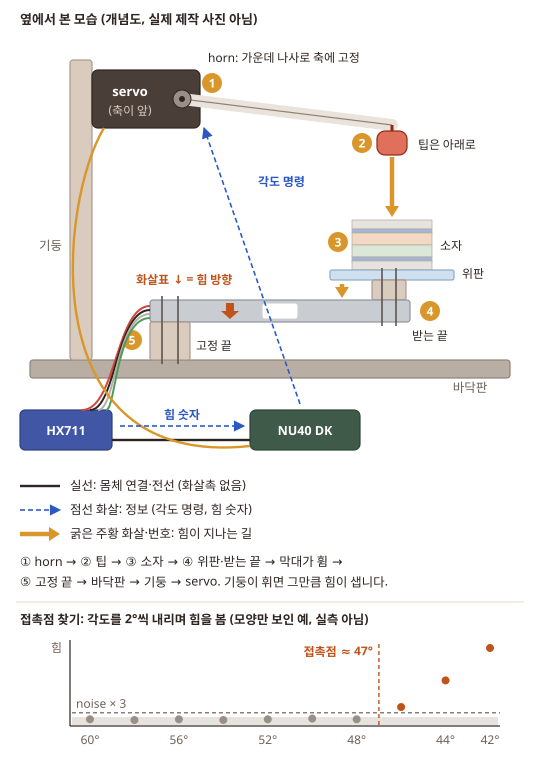
힘의 길. servo가 낸 힘은 ① horn → ② 팁 → ③ 소자 → ④ 위판과 load cell의 받는 끝 → 막대가 아주 조금 휨 → ⑤ 고정 끝 → 바닥판 → 기둥 → 다시 servo로 돌아오는 고리입니다. load cell은 이 고리에서 막대가 휘는 정도만 잽니다. 그래서 고리 중 한 곳이라도 흔들리거나 힘이 다른 길로 새면(예: 위판이 바닥판에 닿음, 기둥이 휨) 소자에 실제로 걸린 힘과 잰 힘이 달라집니다.
load cell 고정: 고정 끝과 받는 끝
할 일
- 막대의 한쪽 끝을 고정 끝으로 정합니다. 받침(spacer, 몇 mm 두께의 판이나 너트)을 끼워 바닥판에 나사 2개로 조입니다.
- 다른 쪽 끝이 받는 끝입니다. 받침을 끼워 위판(아크릴)에 나사 2개로 조입니다. 소자는 이 위판 위, 받는 끝 바로 위에 놓습니다.
- 막대에 붙은 화살표 스티커가 아래(누르는 방향)를 향하게 둡니다. 흔한 조립 안내는 스티커가 없는 쪽을 고정 끝으로 둡니다 [예: ShillehTek 조립 안내]. 내 제품의 설명서가 우선입니다 [제품 설명서 확인].
- 가운데 흰 부분(strain gauge, 휘는 정도를 재는 얇은 막)은 아무 데도 닿지 않게 둡니다. 선은 테이프로 바닥판에 붙여, 누를 때 선이 막대를 당기지 않게 합니다.
위판을 손가락으로 살짝 누를 때 위판이나 막대가 바닥판에 닿으면 받침이 너무 얇습니다. 화살표가 위를 향하게 달면 힘을 줄 때 숫자가 거꾸로 움직일 수 있습니다.
servo 몸통과 팁 높이
할 일
- servo는 load cell과 같은 바닥판에 세운 단단한 기둥(아크릴판, 알루미늄 앵글 등)에 나사로 고정합니다. 책상처럼 다른 곳에 따로 두면 힘의 고리가 책상을 거치면서 흔들립니다.
- servo 축(horn이 끼는 톱니 축)이 옆을 보게 고정합니다. 옆에서 볼 때 팔이 위아래로 돌게 됩니다.
- 팁이 소자에 닿는 순간 horn 팔이 거의 수평이 되도록 기둥에서 servo 높이를 맞춥니다(받침을 끼우거나, 기둥의 긴 구멍으로 조절). 수평 근처에서는 팁이 거의 위아래로만 움직여 소자 위에서 미끄러지지 않습니다.
- 팁은 팔 끝의 아래쪽에 붙이고, 소자의 활성 면적(테이프 구멍) 가운데 위에 오게 합니다.
horn 방향 맞추기 (firmware를 올린 뒤)
할 일 소자는 아직 올리지 않습니다.
- C_tapper를 올리면 켤 때 servo가 UP 자세(
UP = 60)로 갑니다. horn은 그다음에 끼웁니다. 소자 쪽을 향하고 수평보다 조금 위를 보게 끼운 뒤 가운데 나사로 조입니다. - Serial Monitor에
ANGLE,55→ Enter. 팔이 아래로 조금 내려가면 방향이 맞습니다. 위로 가면 servo를 반대 방향으로 다시 고정합니다. 이 페이지의UP = 60,DOWN = 42는 "숫자가 작을수록 내려감"을 가정한 예입니다. ANGLE,60으로 다시 올립니다.
horn이 축에서 헛돌면 가운데 나사가 풀린 것입니다. 팔 끝이 처지거나 떨리면 팔이 너무 길거나 얇은 것이니, 짧고 두꺼운 horn으로 바꿉니다.
영점과 접촉점 찾기 (firmware를 올린 뒤)
할 일
- 영점: 위판까지 조립하고, 소자는 내려놓고, 팁은 위에 떠 있는 상태(
ANGLE,60)에서 TARE를 보냅니다. 위판 무게까지 0이 됩니다. Upload·RESET·USB를 다시 꽂을 때마다 다시 합니다. - noise: 소자를 올리고, 각도 → 힘 표와 같은 방법(
DOWN을 바꿔 Upload → 실습 5)으로DOWN = 60(닿지 않음)일 때의 peak force를 봅니다. 안 눌러도 나오는 이 흔들림이 noise입니다. - 접촉점:
DOWN을 60°에서 2°씩, 가까워지면 1°씩 내리며 같은 방법으로 peak force를 봅니다. 힘이 noise의 약 3배를 처음 넘는 각도가 접촉점입니다. 눈으로 본 "막 닿는 각도"와 함께 적습니다. - 실제로 누를 각도(
DOWN)는 접촉점보다 몇 도 더 내린 곳에서, 원하는 힘이 나오는 각도로 각도 → 힘 표에서 고릅니다.
지금 firmware에는 "지금 힘 읽기" 명령이 없어서 각도마다 Upload를 다시 해야 합니다. "noise의 3배"는 흔히 쓰는 어림 기준이며, 이 장치에서 정한 값이 아닙니다 [실물 미검증].
각도를 내려도 힘이 계속 noise 수준이면 팁이 소자에 닿지 않는 것입니다. 기둥에서 servo를 내립니다. DOWN = 60에서 이미 힘이 크면 팁이 처음부터 소자를 누르고 있는 것입니다. servo를 올립니다.
firmware 올리기와 calibration·기록
이제 board에 할 일을 가르칩니다. 새 저울을 사면 먼저 영점을 맞추고, 무게를 아는 추로 눈금이 맞는지 확인하는 것처럼 합니다. 순서는 이렇습니다: board에 C_tapper firmware를 올리기 → 영점 맞추기 → load cell의 숫자를 뉴턴(N)으로 바꾸는 계수 구하기 → 리듬 한 번 눌러 힘 곡선 보기(실습 5) → servo 각도가 실제로 몇 N인지 표로 만들기.
firmware: board 안에 올려 두는 프로그램. P3.1에서 Arduino IDE로 올리는 법을 익혔습니다. 여기서는 C_tapper를 씁니다.
library: Arduino 코드가 부품을 쉽게 다루도록 남이 미리 짜 둔 코드 묶음. Arduino IDE의 Library Manager에서 설치합니다.
Serial Monitor: Arduino IDE 안에서 board와 글자로 대화하는 창. VS Code의 TERMINAL과는 다른 창입니다. 아래 명령은 모두 이 창에서 board에 글자 한 줄씩 보냅니다.
아래 Serial Monitor 화면은 firmware의 출력 형식에 맞춰 적은 예상 화면(실물 미검증)입니다. 숫자는 장치마다 다릅니다. firmware는 NU40용 컴파일만 확인했습니다.
Arduino IDE 메뉴는 영어 화면 기준으로 적었습니다. 한국어 화면이면 이름이 다를 수 있습니다(File = 파일, Tools = 도구, Sketch = 스케치).
HX711 library 설치 (한 번만, 2분)
할 일
- Arduino IDE를 엽니다.
- 창 왼쪽 세로 줄의 책 모양 아이콘(Library Manager)을 누릅니다.
- 위쪽 검색 칸에
HX711을 칩니다. - 목록에서 만든 사람이 Bogdan Necula(bogde)인 HX711 Arduino Library를 찾아 INSTALL을 누릅니다 [목록의 이름은 IDE 화면에서 확인].
- 버튼이
INSTALLED로 바뀌면 끝.
servo용 library(Servo)는 NU40 board package에 들어 있어 따로 설치하지 않습니다.
C_tapper.ino 열기
할 일
- Arduino IDE 메뉴 File → Open…
- 뜬 창에서 바탕 화면 →
ion-projects-code→firmware→C_tapper폴더로 들어갑니다. C_tapper.ino를 고르고 열기. 새 Arduino IDE 창에 코드가 뜹니다.
맨 위 줄이 // C_tapper — 서보로 정해진 리듬을 누르고, …이면 맞는 파일입니다. 코드는 아직 고치지 않습니다.
board·port 고르고 Upload
할 일
- board USB가 PC에 꽂혀 있는지 봅니다.
- Tools → Board가 NU40DK nRF52840인지 봅니다.
- Tools → Port에서 board의 COM 번호(예:
COM6)를 고릅니다. 창 위쪽 가운데의 보드·포트 선택 상자에도 같은 이름이 보이면 됩니다. - 창 위쪽 왼쪽의 Upload(→ 오른쪽 화살표) 단추를 누릅니다.
- 아래 Output 창에 글자가 흐릅니다(1–2분). 끝에
Done uploading(또는 업로드가 끝났다는 줄)이 나오면 성공입니다.
HX711.h: No such file or directory→ HX711 library 설치를 다시.Adafruit_TinyUSB.h: No such file or directory→ board가 NU40DK로 선택되지 않은 것.- Port 메뉴가 회색이거나 비어 있음 → USB 케이블이 충전 전용이거나 덜 꽂힘. P3.1의 COM 번호 확인으로.
Serial Monitor 열고 READY 확인
할 일
- 창 오른쪽 위의 돋보기 아이콘(Serial Monitor)을 누릅니다. 아래쪽에 Serial Monitor 칸이 열립니다.
- 그 칸 위쪽 줄에 긴 입력 칸이 있고, 그 오른쪽에 드롭다운 두 개가 있습니다.
- 오른쪽 드롭다운(속도)을 115200 baud로 고릅니다.
- 그 왼쪽 드롭다운(줄 끝)을 New Line으로 고릅니다(옛 IDE 1.x에서는 'Newline').
- board의 RESET 단추를 한 번 누릅니다. 아래 칸에
READY가 찍히면 성공입니다.
baud: board와 PC가 1초에 주고받는 신호 수. 양쪽이 같은 값(115200)이어야 글자가 깨지지 않습니다. 라디오 주파수를 맞추는 것과 같습니다.
[ ] [ New Line ▾ ] [ 115200 baud ▾ ]
--------------------------------------------------------------------------------
READY맨 윗줄이 입력 칸 · 줄 끝 · 속도, 선 아래가 board가 보낸 글자입니다. 앞으로 TARE, CAL,100, ANGLE,60 같은 명령은 모두 이 입력 칸을 한 번 클릭 → 글자를 그대로 치기(또는 붙여 넣기) → Enter로 보냅니다. VS Code에 넣는 것이 아닙니다.
- 아무것도 안 나옴 → 속도가 115200인지 봅니다. firmware는 켜진 뒤 최대 3초만 PC 연결을 기다렸다가
READY를 보내므로, Serial Monitor를 늦게 열면READY를 못 볼 수 있습니다. Serial Monitor를 연 뒤에 RESET을 누릅니다. - 글자가
⸮⸮⸮처럼 깨짐 → 속도가 115200이 아닙니다.
영점 맞추기 (TARE)
부엌 저울에 빈 그릇을 올리고 "0" 단추를 누르는 것과 같습니다.
TARE (영점): 아무것도 안 올린 상태를 0으로 맞추는 것.
할 일 load cell 위에 아무것도 올리지 않은 채(소자도 빼고), board를 켠 지 10분쯤 지나 예열된 뒤에 합니다.
- Serial Monitor 위쪽 입력 칸을 한 번 클릭합니다.
TARE를 칩니다(대문자, 띄어쓰기 없이).- Enter.
[ ] [ New Line ▾ ] [ 115200 baud ▾ ]
--------------------------------------------------------------------------------
READY
TARE,-83120숫자는 영점에서의 원시 값입니다. 값 자체는 중요하지 않고, 응답이 오는 것이 중요합니다. 입력 칸은 Enter 뒤 비워집니다.
영점 값은 board 메모리에만 있고 저장되지 않습니다. Upload를 다시 하거나, RESET을 누르거나, USB를 다시 꽂으면 영점이 지워집니다(firmware 코드에서 확인). 그때마다 빈 load cell로 TARE를 다시 보냅니다.
calibration 계수 구하고 직선성 보기 (CAL)
load cell은 힘을 "83120" 같은 숫자로만 알려 줍니다. 무게를 아는 추를 올려서 숫자 하나가 몇 N인지를 정합니다.
calibration (보정): 무게를 아는 추를 올려 "숫자 하나가 몇 뉴턴(N)인지" 정하는 것. 100 g 추는 약 0.981 N입니다.
직선성: 추를 두 배로 올리면 숫자도 두 배가 되는가. 그렇다면 어느 추로 구해도 계수가 같습니다.
할 일
- 100 g 추를 load cell 위 소자 자리에 올립니다. 흔들림이 멈출 때까지 몇 초 기다립니다.
- 입력 칸에
CAL,100을 치고 Enter. 숫자는 추의 그램(g)입니다. - board가 calibration 계수를 한 줄로 보냅니다. 이 줄을 메모장에 복사해 둡니다(Serial Monitor에서 줄을 끌어 칠하고 Ctrl+C).
READY
TARE,-83120
CAL_N_PER_COUNT = 1.02350000e-05f;- 추를 내리고 20 g, 50 g, 200 g으로 바꿔 가며 같은 일을 합니다: 추 올리기 →
CAL,20(또는CAL,50,CAL,200) → Enter. 추 무게와 명령의 숫자가 같아야 합니다. - 네 줄의 계수를 표로 적습니다. 네 값이 거의 같으면(예: 서로 몇 % 안) load cell이 힘에 비례(직선)한다는 뜻입니다.
| 추 | 명령 | 나온 계수 |
|---|---|---|
| 20 g (≈ 0.196 N) | CAL,20 |
|
| 50 g | CAL,50 |
|
| 100 g (≈ 0.981 N) | CAL,100 |
|
| 200 g | CAL,200 |
E,cal → 명령의 숫자를 0 이하로 적었거나, 추를 올려도 값이 안 변한 것(load cell 선 확인). 네 계수가 크게 다름 → 거치대가 흔들리거나 load cell이 꽉 고정되지 않은 것.
계수를 firmware에 넣고 다시 Upload
할 일
- Arduino IDE 편집 창에서 Ctrl+F를 누르고
CAL_N_PER_COUNT를 찾습니다. - 아래 before 줄을 찾아, 숫자 부분만 100 g 계수(또는 네 값의 평균)로 바꿔 after처럼 만듭니다. 앞의
float와 끝의;는 지우지 않습니다. board가 보낸 줄을 통째로 붙여 넣으면float가 빠져 컴파일 오류가 납니다.
before:
float CAL_N_PER_COUNT = 1.0e-5f; // ← CAL 결과after (숫자는 예):
float CAL_N_PER_COUNT = 1.02350000e-05f; // ← CAL 결과- File → Save(Ctrl+S).
- Upload(→) 를 다시 누르고
Done uploading을 확인합니다. - Serial Monitor가 닫혔으면 다시 열고, 빈 load cell로
TARE를 다시 보냅니다(Upload로 영점이 지워졌으므로).
'CAL_N_PER_COUNT' does not name a type 같은 컴파일 오류 → float가 지워진 것. before 줄 모양으로 되돌린 뒤 숫자만 바꿉니다.
실습 5. tapper 시험: 리듬 한 번 누르고 힘 곡선 보기 (p4_5_tap.py)
tapper에 "4번 눌러라"를 보내고, board가 돌려준 힘 기록을 그림으로 봅니다. Serial Monitor에서는 힘 숫자가 한 줄로 길게 흘러가 읽기 어렵지만, 그림으로 보면 누름마다 몇 N이었는지, 정해진 시각에 눌렀는지 바로 보입니다.
이 실습으로 아래 "각도 → 힘" 표를 채우고, 같은 리듬 50번의 흩어짐도 봅니다. 장비가 없는 지금은 MOCK = True로, board 없이 먼저 돌려 봅니다.
board와는 글자 한 줄씩 주고받습니다. 보내는 줄은 T,1,600,600,600("trial 번호 1, onset 간격 600·600·600 ms로 4번 눌러라")이고, board는 약 3.8초 뒤 네 줄로 답합니다.
| 받는 줄 | 뜻 |
|---|---|
O,1,500,1100,1700,2300 |
trial 1의 실제 onset 시각 4개(ms). 명령을 받은 순간이 0 |
FT,1,0,13,25,38,… |
힘을 잰 시각들(ms). HX711이 80 SPS면 약 12.5 ms 간격 |
FV,1,0.0012,0.0009,… |
그 시각의 힘(N). 누르는 80 ms 동안 값이 솟음 |
X,1,2300 |
마지막 onset 시각 = '끝' trigger. 끝에서 읽는 시점의 기준 |
trigger: "지금이다"라고 알리는 신호. 달리기 출발 총소리처럼, tapper는 마지막 누름이 시작된 시각을 X로 보내고, 그것이 '끝'의 기준이 됩니다. 전류는 그로부터 0.3·0.6·1.0초 뒤 값을 씁니다.
할 일 mylabs에 새 파일 p4_5_tap.py → 붙여 넣기 → Ctrl+S → ▷ (MOCK = True 그대로).
mylabs/p4_5_tap.py
# ============================================================
# P4 실습 5 · tapper 시험: 리듬 한 번 누르고 힘 곡선 보기
#
# 전체 과정:
#
# tapper board에 "T,번호,간격,간격,간격" 한 줄 보내기 (4번 눌러라)
# ↓
# board가 돌려주는 네 줄 읽기
# O : 실제 onset 시각 4개 (ms)
# FT : 힘을 잰 시각들 (ms, 80 SPS면 12.5 ms 간격)
# FV : 그 시각의 힘 (N)
# X : 마지막 onset 시각 = '끝' trigger
# ↓
# 누름마다 peak force(가장 큰 힘)와 hold(최대의 절반을 넘은 시간)
# ↓
# REPEAT번 되풀이 → 그림 1: 힘 곡선, 그림 2(REPEAT > 1): 매번의 peak force 흩어짐
#
# MOCK = True : board 없이 컴퓨터가 만든 가짜 힘 곡선 (지금 바로 돌려 볼 수 있음)
# MOCK = False : 진짜 tapper (C_tapper firmware, TARE·calibration 끝낸 뒤) [실물 미검증]
# ============================================================
import sys
import time
from pathlib import Path
# 공용 코드(python 폴더)를 불러오려고 경로를 잡는다.
CODE = Path(__file__).resolve().parent.parent # ion-projects-code 폴더
sys.path.insert(0, str(CODE / "python")) # 공용 코드 폴더를 찾을 수 있게
import numpy as np
import matplotlib.pyplot as plt
# ============================================================
# 0. 그림 설정 — 건드리지 않아도 됩니다
# ============================================================
plt.rcParams.update({
"font.family": "Malgun Gothic", "axes.unicode_minus": False, "font.size": 11,
"legend.frameon": False, "axes.spines.top": False, "axes.spines.right": False,
})
# ============================================================
# 1. 바꿔 볼 수 있는 설정값 ← 여기를 바꿔 보세요
# ============================================================
MOCK = True # True: board 없이 연습, False: 진짜 tapper
PORT = "COM6" # tapper board의 COM 번호 (장치 관리자에서 확인). MOCK = False일 때만 씀
GAPS_MS = [600, 600, 600] # onset 간격 3개 (ms). firmware 한계: 150–5000
REPEAT = 1 # 같은 리듬을 몇 번 누를까 (흩어짐을 보려면 50)
# ============================================================
# 2. tapper에 한 번 누르라고 하기
# ============================================================
#
# 보내는 글자: T,1,600,600,600 (Serial Monitor에 손으로 치던 것과 같음)
# 받는 글자: O,1,… FT,1,… FV,1,… X,1,…
# 글자를 쉼표로 잘라 숫자 목록으로 바꾼다.
# ============================================================
if MOCK:
from c_mock import simulate # 공용 코드: 가짜 힘 곡선 (80 ms 반달 모양)
def tap_once(n, gaps_ms):
rng = np.random.default_rng(n)
t, I, onsets, tf, F = simulate(np.array(gaps_ms) / 1000, rng, "memoryless", dict(force=1.0, base=1.0))
return {"O": onsets * 1000, "FT": tf * 1000, "FV": F, "X": [onsets[-1] * 1000]}
else:
import serial # USB로 board와 글자를 주고받는 도구 (pyserial)
ser = serial.Serial(PORT, 115200, timeout=15) # Serial Monitor가 열려 있으면 여기서 오류
time.sleep(2) # board가 연결을 받을 때까지 잠깐 기다림
ser.reset_input_buffer()
def tap_once(n, gaps_ms):
ser.write(("T,%d,%d,%d,%d\n" % (n, *gaps_ms)).encode())
got = {}
while "X" not in got: # X 줄이 오면 한 번 끝
line = ser.readline().decode(errors="replace").strip()
if not line:
raise TimeoutError(f"trial {n}: no answer from tapper")
p = line.split(",")
if p[0] == "E":
raise RuntimeError(f"trial {n}: tapper rejected {line}")
if len(p) > 1 and p[1] == str(n):
got[p[0]] = np.array([float(v) for v in p[2:]])
return got
# ============================================================
# 3. 누름마다 peak force · hold
# ============================================================
#
# 각 onset부터 0.12초 안(누름 80 ms + 여유)에서
# peak = 가장 큰 힘, hold = 힘이 peak의 절반을 넘은 시간
# ============================================================
def press_stats(rec):
tf, F = np.asarray(rec["FT"]) / 1000, np.asarray(rec["FV"])
peaks, holds = [], []
for o in np.asarray(rec["O"]) / 1000:
m = (tf >= o - 0.02) & (tf < o + 0.12)
pk = F[m].max()
above = tf[m][F[m] > 0.5 * pk]
peaks.append(pk)
holds.append((above[-1] - above[0]) * 1000 if len(above) > 1 else np.nan)
return np.array(peaks), np.array(holds)
records = []
for n in range(1, REPEAT + 1):
rec = tap_once(n, GAPS_MS)
records.append((rec, *press_stats(rec)))
if not MOCK:
ser.close()
# ============================================================
# 4. 숫자로 확인
# ============================================================
print("=" * 60)
print(f"tapper test: T,n,{','.join(map(str, GAPS_MS))} x {REPEAT} ({'MOCK, no board' if MOCK else PORT})")
print("=" * 60)
print("trial onsets (ms) peak force (N) hold (ms)")
for n, (rec, pk, hd) in enumerate(records[:5], 1):
on = " ".join(f"{o:.0f}" for o in rec["O"])
print(f"{n:<5} {on:<23} {' '.join(f'{p:.2f}' for p in pk):<24} {' '.join(f'{h:.0f}' for h in hd)}")
if REPEAT > 5:
print(f"... ({REPEAT - 5} more)")
allpk = np.concatenate([pk for _, pk, _ in records])
allhd = np.concatenate([hd for _, _, hd in records])
print()
print(f"peak force : mean {allpk.mean():.2f} N, SD {allpk.std():.2f} N ({len(allpk)} presses)")
print(f"hold : mean {np.nanmean(allhd):.0f} ms, SD {np.nanstd(allhd):.0f} ms")
print(f"last onset (X trigger) of trial 1: {records[0][0]['X'][0]:.0f} ms")
# ============================================================
# 5. 그림 1: 첫 번째 누름 기록의 힘 곡선
# ============================================================
rec, pk, hd = records[0]
tf, F, on = np.asarray(rec["FT"]) / 1000, np.asarray(rec["FV"]), np.asarray(rec["O"]) / 1000
fig, ax = plt.subplots(figsize=(8, 3.6))
ax.plot(tf, F, ".-", color="#c0392b", lw=1.4, ms=4, label="load cell 힘 (점 = 12.5 ms마다 한 번 잰 값)")
for k, o in enumerate(on):
ax.axvline(o, color="#2b59c3", ls="--", lw=1, label="onset (O 줄)" if k == 0 else None)
ax.text(o + 0.1, pk[k], f"{pk[k]:.2f} N", va="center", color="#c0392b", fontsize=10)
ax.axvline(rec["X"][0] / 1000, color="#7a3db8", lw=2, alpha=0.4, label="X: 마지막 onset ('끝')")
ax.set_xlabel("명령을 받은 순간부터의 시간 (s)")
ax.set_ylabel("force (N)")
ax.set_ylim(-0.1, max(pk) * 1.25)
ax.set_title(f"tapper 한 번: T,1,{','.join(map(str, GAPS_MS))} ({'MOCK' if MOCK else '실물'})", loc="left")
fig.tight_layout(rect=(0, 0.1, 1, 1))
fig.legend(*ax.get_legend_handles_labels(), loc="lower center", ncol=3, fontsize=9.5)
# ============================================================
# 6. 그림 2: REPEAT번의 peak force 흩어짐 (REPEAT > 1일 때만)
# ============================================================
if REPEAT > 1:
fig2, ax = plt.subplots(figsize=(8, 3.6))
for k in range(4):
ax.plot(range(1, REPEAT + 1), [r[1][k] for r in records], "o", ms=4, alpha=0.7, label=f"{k + 1}번째 누름")
ax.axhspan(allpk.mean() - allpk.std(), allpk.mean() + allpk.std(), color="0.85", lw=0,
label=f"평균 ± SD ({allpk.mean():.2f} ± {allpk.std():.2f} N)")
ax.set_xlabel("trial 번호")
ax.set_ylabel("peak force (N)")
ax.set_title(f"같은 리듬 {REPEAT}번: 매번 같은 힘으로 눌렀나?", loc="left")
fig2.tight_layout(rect=(0, 0.1, 1, 1))
fig2.legend(*ax.get_legend_handles_labels(), loc="lower center", ncol=5, fontsize=9.5)
plt.show() # 그림 창이 뜹니다. 창을 닫으면 프로그램이 끝납니다.코드에서 볼 곳.
- 1번 상자:
MOCK,PORT(COM 번호),GAPS_MS(간격 3개),REPEAT(몇 번 되풀이). - 2번 상자
tap_once:MOCK = True면 컴퓨터가 가짜 힘 곡선을 만들고,False면 진짜 board에T,…줄을 보낸 뒤X줄이 올 때까지 한 줄씩 읽어 쉼표로 자릅니다. Serial Monitor에 손으로 치던 일을 코드가 대신합니다. - 3번 상자
press_stats: 누름마다 가장 큰 힘(peak)과, 힘이 그 절반을 넘은 시간(hold)을 셉니다. 실습 3의 표와 같은 뜻입니다.
▷ 실행하면:
PS C:\Users\내이름\Desktop\ion-projects-code> & python mylabs/p4_5_tap.py
============================================================
tapper test: T,n,600,600,600 x 1 (MOCK, no board)
============================================================
trial onsets (ms) peak force (N) hold (ms)
1 500 1100 1700 2300 2.02 2.07 2.02 1.86 37 38 38 38
peak force : mean 2.00 N, SD 0.08 N (4 presses)
hold : mean 38 ms, SD 0 ms
last onset (X trigger) of trial 1: 2300 ms
PS C:\Users\내이름\Desktop\ion-projects-code>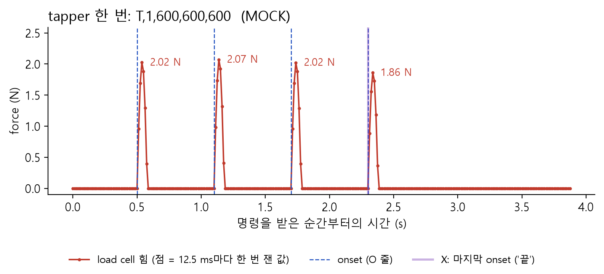
O 줄), 보라 선 = 마지막 onset(X 줄). 누름마다 가장 큰 힘이 숫자로 적혀 있습니다.
결과가 뜻하는 것. 네 번 모두 약 2 N(1.86–2.07 N)으로 눌렀고, 600 ms 간격대로 0.5·1.1·1.7·2.3초에 눌렀습니다. hold가 38 ms로 servo가 내려가 있는 80 ms보다 짧은 것은 정상입니다. 힘이 오르내리는 앞뒤 부분은 "최대의 절반"을 넘지 못하기 때문입니다.
실물에서는 [실물 미검증]. TARE·calibration을 끝낸 뒤, ① Serial Monitor를 닫고(가장 확실한 방법은 Arduino IDE를 통째로 닫기. 한 COM port는 한 프로그램만 쓸 수 있습니다), ② MOCK = False, PORT를 내 COM 번호로 바꾸고 ▷. 예상되는 차이는 이렇습니다.
- 힘 곡선이 반달처럼 매끈하지 않고, 팁이 닿는 순간 튀거나 떨릴 수 있습니다.
- 누르지 않을 때의 값이 0보다 조금 큽니다(소자 무게).
- HX711이 10 SPS면 점이 100 ms 간격이라 80 ms 누름의 꼭대기를 놓칩니다(peak가 들쭉날쭉). RATE 핀으로 80 SPS로 바꿉니다.
- 미확인 Python이 port를 여는 순간 board가 다시 시작되는지는 확인하지 못했습니다. 다시 시작되면 TARE가 지워져, 누르지 않을 때의 값이 0에서 크게 벗어납니다.
could not open port 'COM6': PermissionError(13, '액세스가 거부되었습니다.', None, 5)→ Serial Monitor(또는 다른 프로그램)가 port를 쥐고 있음. Arduino IDE를 닫고 다시.could not open port 'COM6': FileNotFoundError(…)→ COM 번호가 틀림. 장치 관리자에서 다시 확인.TimeoutError: trial 1: no answer from tapper→ COM 번호가 다른 장치이거나 board에 C_tapper가 안 올라감.RuntimeError: trial 1: tapper rejected E,gap_range→ 간격이 150 ms보다 짧거나 5000 ms보다 김.- (오류 문구는 Python·pyserial이 내는 형식에 맞춘 예상입니다.)
REPEAT = 1을 REPEAT = 50으로 바꿔 ▷. 같은 리듬을 50번 누를 때 힘은 얼마나 흩어질까요? (실물이면 한 번에 약 4초, 50번에 3–4분)
MOCK에서는 200번의 누름이 평균 1.98 N, SD 0.10 N입니다. 둘째 그림 창에서 점들이 회색 띠(평균 ± SD) 둘레에 고르게 흩어져 있고, 시간이 지나며 한쪽으로 흘러가지 않습니다.
PS C:\Users\내이름\Desktop\ion-projects-code> & python mylabs/p4_5_tap.py
============================================================
tapper test: T,n,600,600,600 x 50 (MOCK, no board)
============================================================
trial onsets (ms) peak force (N) hold (ms)
1 500 1100 1700 2300 2.02 2.07 2.02 1.86 37 38 38 38
2 500 1100 1700 2300 2.01 1.94 1.95 1.75 37 38 38 38
3 500 1100 1700 2300 2.19 1.74 2.03 1.93 37 38 38 38
4 500 1100 1700 2300 1.93 1.97 2.16 2.06 37 38 38 38
5 500 1100 1700 2300 1.91 1.86 1.97 2.03 37 38 38 38
... (45 more)
peak force : mean 1.98 N, SD 0.10 N (200 presses)
hold : mean 38 ms, SD 0 ms
last onset (X trigger) of trial 1: 2300 ms
PS C:\Users\내이름\Desktop\ion-projects-code>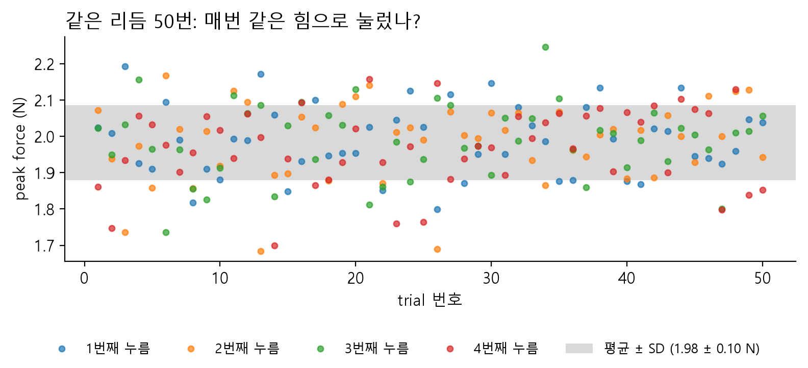
실물에서 볼 점: ① SD가 작을수록 tapper가 고르게 누른 것입니다. ② P4.5에서는 리듬 사이의 평균 힘 차이가 이 SD보다 작아야 힘이 easy cue가 되지 않습니다(실습 3과 같은 비교). 또 점들이 trial 번호를 따라 한쪽으로 흘러가면(팁 마모, load cell drift) 측정 중간에 TARE를 다시 해야 할 수 있습니다.
"각도 → 힘" 표 만들기 (ANGLE)
servo에게는 "몇 N으로 눌러라"가 아니라 "몇 도까지 내려라"만 말할 수 있습니다. 그래서 각도마다 실제로 몇 N이 되는지 표를 만들어 둡니다.
할 일 먼저 소자를 load cell 위 자리에 놓습니다.
- Serial Monitor 입력 칸에
ANGLE,60을 치고 Enter. 팔이 올라간 자세입니다.ANGLE명령은 답을 보내지 않습니다(움직이기만 함). ANGLE,50→ Enter,ANGLE,45→ Enter,ANGLE,42→ Enter … 처럼 각도를 조금씩 내리며 팁이 소자에 막 닿는 각도를 눈으로 찾습니다.- 마지막에
ANGLE,60으로 팔을 다시 올립니다.
각도마다의 힘은 리듬을 한 번 눌러 봐야 압니다(firmware에 "지금 힘 읽기" 명령이 따로 없음). 후보 각도마다 이렇게 합니다.
C_tapper.ino에서 Ctrl+F로DOWN을 찾아, 아래 줄의42를 후보 각도로 바꿉니다(before → after). 쉼표·세미콜론은 그대로 둡니다.
before:
int UP = 60, DOWN = 42; // ← 힘–각도 표로 정한 각도after (예: 후보 각도 45):
int UP = 60, DOWN = 45; // ← 힘–각도 표로 정한 각도- Ctrl+S → Upload(→) →
Done uploading확인 → Serial Monitor를 엽니다. - Upload로 영점이 지워졌으므로, 소자를 잠깐 들어낸 빈 load cell로
TARE→ Enter. 그다음 소자를 다시 같은 자리에 놓습니다. - Arduino IDE를 닫고, VS Code에서 실습 5를
MOCK = False로 ▷. TERMINAL의peak force : mean …이 그 각도의 힘 [N]입니다. - 표에 적고, 다음 후보 각도는 Arduino IDE를 다시 열어 4번부터.
| 각도 | 힘 [N] (내 장치에서 잰 값) |
|---|---|
| 60 | 0 (안 닿음) |
| 50 | |
| 45 | |
| 42 |
원하는 힘이 나오는 각도를 골라 DOWN에 넣고 한 번 더 Upload합니다. 그다음 실습 5를 REPEAT = 50으로 돌려 같은 리듬 50번의 흩어짐(평균 ± SD)을 기록해 둡니다.
같은 각도라도 소자 두께, 팁 마모, 거치대 상태에 따라 힘이 달라집니다. 그래서 매 trial의 힘을 load cell로 기록하고, 리듬마다 힘이 달랐는지 반드시 비교합니다(P4.5에서 easy cue 점검).
P4.4. 기본 특성
새 공을 사면 경기 전에 바닥에 떨어뜨려 얼마나 튀는지, 두 번 연달아 튀기면 어떻게 되는지 먼저 봅니다. P4.4도 리듬 과제 전에, 소자가 누름에 어떻게 반응하는지 네 가지 기본 실험으로 숫자를 만듭니다. P2.1이 전압 소자에 한 것을 누름 소자에 하는 것입니다.
| 실험 | 방법 | 얻는 것 |
|---|---|---|
| E1 힘–전류 | 여러 힘으로 각 10회 | sensitivity, 누를 때·뗄 때 차이 |
| E2 step response | 누른 채 5초, 뗀 뒤 30초 | 반응·회복의 시간 규모 (지수 하나로 맞는지도 확인) |
| E3 paired pulse | 두 번 누름, onset 간격 0.15–5초 | 간격에 따른 두 번째/첫 번째 응답 비 |
| E4 일관성 | E3을 같은 날 3번, 다른 날 1번 | 재현성·drift |
sensitivity (민감도): 힘이 1 N 늘 때 전류가 얼마나 변하나. 예: 1 N에서 +10 nA, 2 N에서 +20 nA면 10 nA/N.
step response (계단 응답): 힘을 갑자기 걸고 한참 유지했다가 갑자기 뗐을 때 전류가 따라가는 모양. 얼마나 빨리 반응하고 얼마나 천천히 돌아오는지(시간 규모)가 보입니다.
지수 하나로 맞는지: 돌아오는 곡선이 "일정 시간마다 반씩 줄어드는" 단순한 모양(time constant τ 하나)인지, 아니면 빠르게 줄다가 느리게 줄듯이 두 부분이 섞였는지.
paired pulse (짝자극): 두 번 눌러서 두 번째 반응 ÷ 첫 번째 반응을 보는 것. 간격이 짧을수록 첫 누름의 흔적이 남아 비가 1에서 멀어집니다. 간격을 바꿔 가며 재면 흔적이 사라지는 시간이 나옵니다.
E1 힘–전류
할 일 "각도 → 힘" 표에서 고른 각도 3–4개로, 각 힘마다 10번씩 누르며 전류를 기록합니다. 힘(가로)–전류 변화(세로) 그래프를 그리고, 누를 때와 뗄 때의 값을 따로 적습니다.
E2 step response
할 일 Serial Monitor 입력 칸에 ANGLE,<DOWN 각도>를 보내 5초 누른 채 두었다가 ANGLE,<UP 각도>로 떼고 30초 동안 전류를 기록합니다. 돌아오는 곡선이 지수 하나로 맞는지(반으로 줄어드는 시간이 일정한지) 봅니다.
E3 paired pulse
할 일 두 번만 누르되 onset 간격을 0.15, 0.3, 0.6, 1, 2, 5초로 바꿔 가며 잽니다. 간격마다 "두 번째 반응 ÷ 첫 번째 반응"을 적어, 간격(가로)–비(세로) 그래프를 그립니다. (T 명령은 4번 누르므로, 두 번 누름은 ANGLE을 직접 보내거나 뒤 두 간격을 5000 ms로 길게 둡니다.)
E4 일관성
할 일 E3을 같은 날 3번, 다른 날 1번 반복합니다. 네 번의 그래프를 겹쳐 그리고, 같은 날 안의 차이와 날 사이의 차이를 적습니다. 날 사이 차이가 크면 drift입니다.
모든 실험을 control에도 똑같이 합니다.
P4.5. 리듬 과제: "끝에서 몇 번만 읽기"
드디어 본 질문입니다. 친구가 책상을 두드린 리듬을, 소리를 내내 듣지 않고 두드림이 끝난 직후 책상 위 물컵의 물결만 한 번 보고 맞힐 수 있을까요? 물결이 아직 남아 있고 그 모양이 리듬마다 다르다면 가능합니다.
P4.5는 이것을 진짜 소자로 합니다. servo가 네 가지 리듬으로 누르고, 소스미터가 전류를 계속 읽어 둡니다. 그다음 기록에서 끝의 전류 1개 또는 3개만 뽑아 리듬을 맞혀 봅니다. 분석은 PC만으로 분석 연습에서 한 것과 똑같습니다. 다른 점은 가짜 기록 대신 실습 6이 진짜 기록을 만든다는 것뿐입니다.
리듬과 easy cue 통제
실습 1(공용 코드 c_rhythm.py의 make_schedule)이 누름 시각표를 만듭니다. 리듬은 분석 연습의 네 가지와 같습니다.
| 리듬 (결과표 번호) | 간격 비율 (onset 3개 사이) | 느낌 |
|---|---|---|
| R1 균일 (0) | 1/3 · 1/3 · 1/3 | 탁 — 탁 — 탁 — 탁 |
| R2 앞에 몰림 (1) | 1/9 · 1/9 · 7/9 | 탁·탁·탁 ……… 탁 |
| R3 뒤에 몰림 (2) | 7/9 · 1/9 · 1/9 | 탁 ……… 탁·탁·탁 |
| R4 가운데 쉼 (3) | 1/9 · 7/9 · 1/9 | 탁·탁 ……… 탁·탁 |
- 4번 누름. 첫 onset → 마지막 onset의 span을 모든 리듬에서 같게(기본 1.8초) 하고, 간격 비율만 다르게 합니다. 1.8초의 1/9은 0.2초, 7/9는 1.4초, 1/3은 0.6초입니다.
- 간격에 ±10 % jitter, 최소 간격 0.15초, 리듬당 60회, 순서를 섞습니다.
span (총 길이): 첫 onset에서 마지막 onset까지의 시간. 모든 리듬에서 1.8초로 같게 해서, "빨리 끝난 리듬"이라는 easy cue를 없앱니다.
그래도 남을 수 있는 easy cue를 실습 3으로 확인합니다.
- 리듬별 최대 힘·누름 시간(load cell) — 실습 3으로 평균·SD 비교. 다르면 소자가 아니라 힘 차이로 구별했을 수 있습니다.
- 마지막 누름에서 readout까지의 시간은 모든 리듬에서 같게 (+0.3/+0.6/+1.0 s).
- R2는 마지막 간격이 길고 R3은 짧습니다. 그래서 "마지막 누름 직전 간격"만으로도 구별될 수 있습니다. ideal memoryless model(결과표의
force_end3)이 이 단서를 얼마나 쓰는지가 baseline이 됩니다.
'끝'은 누가 알려 주나
readout 시점의 기준은 tapper가 보내는 마지막 onset 시각(X, 외부 trigger)입니다. 실제 장치에서 trigger가 없다면 소자 신호만으로 끝을 찾아야 합니다. 그러려면 그동안 계속 읽어야 하므로, 그 읽기 횟수를 비용에 넣습니다.
실행 (실물 검증 대기)
| 실습 | 하는 일 | 결과로 보는 것 |
|---|---|---|
| 1 (다시) | 리듬당 60회 일정 | trial 240개 시각표 |
| 6 | tapper로 누르며 전류 기록 (먼저 8 trial, 그다음 나머지) | 마지막 trial의 힘·전류, trial마다 힘 |
| 3 · 4 (다시) | 진짜 기록 분석 | easy cue 표, 같은 날 / 다른 날 점수 |
그 전에 장비 준비 카드 네 개를 먼저 합니다. 실습 6은 지금 MOCK = True로 장비 없이 미리 돌려 볼 수 있습니다.
설정 파일 만들기 (10분)
실습 6에게 "내 소스미터는 어디에 있고, 소자는 무엇이며, 전압은 얼마로 읽어라"를 알려 주는 메모를 만듭니다.
할 일 원본 config_c_example.json은 그대로 두고, 복사본 config_c.json을 만들어 고칩니다.
- VS Code EXPLORER에서
python폴더를 펼칩니다. config_c_example.json에 마우스 오른쪽 단추 → Copy, 이어서python폴더에 마우스 오른쪽 단추 → Paste.config_c_example copy.json이 생깁니다.- 그 파일에 마우스 오른쪽 단추 → Rename →
config_c.json→ Enter. config_c.json을 눌러 편집기에 엽니다.- 아래 before(원래 내용)에서 (바꿀 것) 값을 내 실험에 맞게 고쳐 after처럼 만들고 Ctrl+S.
before (원래 config_c_example.json):
{
"note": "C 실제 장비용 (c_run.py). [바꿀 것] 표시된 값을 내 장비·소자에 맞게 고치세요. 값은 예시이며 검증된 안전 범위가 아닙니다.",
"instrument": {
"addr": "GPIB0::24::INSTR",
"compliance_A": 1e-5,
"v_limit_V": 0.5,
"nplc": 0.1,
"i_range_A": 1e-6,
"v_range_V": 2.0
},
"device": {
"id": "pdev01",
"structure": "flat 또는 textured",
"polarity": "+V = EMIMSPA 쪽 ITO가 높은 전위",
"env": "측정 때 온도·습도"
},
"encoding": {"read_V": 0.1, "rest_s": 5.0}
}after (값은 예입니다. 내 값으로):
{
"note": "C 실제 장비용 (c_run.py). [바꿀 것] 표시된 값을 내 장비·소자에 맞게 고치세요. 값은 예시이며 검증된 안전 범위가 아닙니다.",
"instrument": {
"addr": "GPIB0::22::INSTR",
"compliance_A": 1e-5,
"v_limit_V": 0.5,
"nplc": 0.1,
"i_range_A": 1e-6,
"v_range_V": 2.0
},
"device": {
"id": "p01_textured",
"structure": "textured",
"polarity": "+V = EMIMSPA 쪽 ITO가 높은 전위",
"env": "23 C, RH 45 %"
},
"encoding": {"read_V": 0.05, "rest_s": 5.0}
}| 줄 | 무엇으로 | |
|---|---|---|
instrument.addr |
NI MAX에서 본 소스미터 주소 | (바꿀 것) |
compliance_A · v_limit_V |
이번 실험의 전류 제한·전압 상한 | (바꿀 것) |
device.id · structure · env |
소자 이름, 평평(flat)/요철(textured), 온도·습도 | (바꿀 것) |
encoding.read_V |
P2.1에서 거의 직선인 작은 read voltage | (바꿀 것) |
encoding.rest_s |
trial 사이 쉬는 시간(초) | 기본 5.0 |
nplc · i_range_A · v_range_V |
소스미터 측정 설정 | 모르면 그대로 (지금 몰라도 됨) |
NI MAX 주소: PC가 소스미터를 부르는 이름(예: GPIB0::24::INSTR). 집 주소처럼 이 글자로 장비를 찾아갑니다. P2.0R에서 NI MAX라는 프로그램으로 찾은 것입니다.
따옴표(")나 쉼표(,), 중괄호({ })를 하나라도 지우면 파일이 깨집니다. 따옴표 안의 글자와 숫자만 바꿉니다. 실행할 때 Expecting ',' 같은 오류가 나면 그 줄 번호 근처를 다시 봅니다.
tapper의 COM 번호 확인 (3분)
PC에 USB 장치가 여러 개 꽂혀 있으면, Windows는 각각에 번호표를 붙입니다. 실습 6이 tapper를 찾아가려면 그 번호표를 알아야 합니다.
COM 번호: USB로 꽂은 board에 Windows가 붙이는 이름(예: COM6). 꽂을 때마다 같을 수도, 바뀔 수도 있습니다.
할 일
- tapper board를 USB로 PC에 꽂습니다.
- 키보드의 Windows 키를 누르고
장치 관리자를 친 뒤 Enter. - 포트(COM & LPT) 앞의
>를 눌러 펼칩니다. - board에 해당하는 줄(예:
USB 직렬 장치(COM6))의 괄호 안 번호를 적습니다. 어느 줄인지 모르겠으면 USB를 뺐다 꽂아 보고, 사라졌다 나타나는 줄이 board입니다.
Arduino IDE의 Tools → Port에 보이는 번호와 같습니다.
TARE 하고 Arduino IDE 닫기
할 일
- Arduino IDE의 Serial Monitor에서 소자를 잠깐 들어낸 빈 load cell로
TARE→ Enter.TARE,…답을 확인합니다. - 소자를 다시 같은 자리에 놓습니다.
- Arduino IDE를 통째로 닫습니다(File → Quit). Serial Monitor가 열려 있으면 실습 6이 board에 말을 걸 수 없습니다. 전화 한 대를 두 사람이 동시에 쓸 수 없는 것과 같습니다.
이제부터 board의 USB를 빼지 않습니다. 빼거나 RESET하면 영점이 지워집니다. 미확인 Python이 port를 여는 순간 board가 다시 시작되는지는 실물에서 확인하지 못했습니다. 8 trial 시험 뒤 실습 3의 peak force가 "각도 → 힘" 표의 값과 비슷한지로 확인합니다.
소스미터와 소자 연결
할 일 소스미터 OUTPUT이 꺼진 상태에서 P4.0의 연결 표대로 HI → 위 전극, LO → 아래 전극을 겁니다. OUTPUT은 켜지 않습니다. 실습 6이 설정을 마친 뒤 스스로 켭니다. 프로그램이 멈추거나 이상하면 앞면 OUTPUT 단추로 직접 끕니다.
리듬 일정 만들기 (리듬당 60회)
할 일 mylabs의 p4_1_rhythm.py를 열어 1번 상자의 N_PER_RHYTHM = 15를 60으로 바꾸고 Ctrl+S → ▷.
PS C:\Users\내이름\Desktop\ion-projects-code> & python mylabs/p4_1_rhythm.py
====================================================
rhythm schedule
====================================================
trials : 240 (4 rhythms x 60), order shuffled
span : 1.8 s (first onset -> last onset, same for all)
jitter : +/-10 %
rhythm gap1 (s) gap2 (s) gap3 (s) mean of trials
--------- -------- -------- --------
R1 even 0.60 0.60 0.60
R2 early 0.20 0.20 1.40
R3 late 1.40 0.20 0.20
R4 middle 0.20 1.40 0.20
gap range : 0.17 - 1.45 s
first 8 rhythms in order: [0, 2, 0, 2, 3, 0, 0, 0]
saved : runs/rhythm_n60.npz
PS C:\Users\내이름\Desktop\ion-projects-code>runs 안에 rhythm_n60.npz(trial 240개)가 새로 생깁니다. 연습용 rhythm_n15.npz는 그대로 남습니다. 그림 창은 한 리듬에 60줄이라 빽빽합니다. 실습 1에서 본 것과 모양은 같습니다.
실습 6. 리듬 trial 돌리기: tapper로 누르며 전류 기록 (p4_6_run.py)
진짜 실험의 본 측정입니다. trial마다 소자에 작은 read voltage를 걸어 두고, 소스미터로 전류를 쉬지 않고 읽는 동안 tapper가 리듬대로 4번 누릅니다. 끝나면 전류·힘·onset 시각을 실습 2와 같은 모양의 폴더에 저장합니다. 그래서 분석은 실습 3·4에서 폴더 이름만 바꿔서 합니다.
240 trial은 약 40분이 걸립니다. 그래서 먼저 8 trial만 돌려 장치가 제대로 움직이는지 보고, 같은 파일을 다시 ▷ 해서 나머지를 이어서 잽니다. 지금은 MOCK = True로 장비 없이 이 흐름을 연습합니다.
할 일 mylabs에 새 파일 p4_6_run.py → 붙여 넣기 → Ctrl+S → ▷ (MOCK = True, LIMIT = 8 그대로).
mylabs/p4_6_run.py
# ============================================================
# P4 실습 6 · 리듬 trial 돌리기: tapper로 누르며 소자 전류를 계속 기록
#
# 전체 과정 (trial 하나마다):
#
# 소자에 read voltage를 걸고 rest_s초 쉬기
# ↓
# 소스미터로 전류를 쉬지 않고 읽기 시작 + tapper에 "T,번호,간격,간격,간격"
# ↓
# tapper가 X(마지막 onset)를 보내고 1.2초 더 읽은 뒤 멈춤
# ↓
# 전류·힘·onset 시각을 runs/<RUN_NAME>/raw/trial_xxxxx.npz 로 저장
# (어디까지 했는지 checkpoint.npz에 적어 두므로, 멈춰도 같은 파일을 다시 ▷하면 이어서 함)
# ↓
# 그림: 마지막 trial의 힘·전류, 지금까지 trial의 peak force
#
# MOCK = True : 장비 없이 가짜 소자·가짜 tapper로 (폴더 이름 앞에 mock_)
# MOCK = False : 진짜 소스미터 + tapper (공용 코드 c_run.py와 같은 계산) [실물 미검증]
# 분석은 실습 3·4에서 RUNS = ["c_dev01_day1"]처럼 폴더 이름만 바꿔서 한다.
# ============================================================
import shutil
import sys
import time
from pathlib import Path
# 공용 코드(python 폴더)를 불러오려고 경로를 잡는다.
CODE = Path(__file__).resolve().parent.parent # ion-projects-code 폴더
sys.path.insert(0, str(CODE / "python")) # 공용 코드 폴더를 찾을 수 있게
import numpy as np
import matplotlib.pyplot as plt
from common import load_json # 공용 코드: 설정 파일 읽기
from measure_seq import run_trials # 공용 코드: trial마다 저장·이어서 하기
# ============================================================
# 0. 그림 설정 — 건드리지 않아도 됩니다
# ============================================================
plt.rcParams.update({
"font.family": "Malgun Gothic", "axes.unicode_minus": False, "font.size": 11,
"legend.frameon": False, "axes.spines.top": False, "axes.spines.right": False,
})
# ============================================================
# 1. 바꿔 볼 수 있는 설정값 ← 여기를 바꿔 보세요
# ============================================================
MOCK = True # True: 장비 없이 연습, False: 진짜 장비
CONFIG = "config_c.json" # 내 설정 파일 (python 폴더 안). MOCK이면 config_c_mock.json을 씀
PORT = "COM6" # tapper board의 COM 번호
RHYTHM_FILE = "rhythm_n60.npz" # 실습 1을 N_PER_RHYTHM = 60으로 돌려 만든 일정 (runs 안)
RUN_NAME = "c_dev01_day1" # 기록 폴더 이름: 소자 이름 + 날짜 순번
LIMIT = 8 # 이번에 몇 trial만 할까. None = 남은 것 전부
# ============================================================
# 2. 준비: 일정·설정 읽기
# ============================================================
d = np.load(CODE / "runs" / RHYTHM_FILE)
gaps, y = d["gaps"], d["y"]
if MOCK:
RUN_NAME = "mock_" + RUN_NAME # 가짜 기록이 진짜 기록과 섞이지 않게
cfg = load_json(CODE / "python" / "config_c_mock.json")
else:
cfg = load_json(CODE / "python" / CONFIG)
run_dir = CODE / "runs" / RUN_NAME
# 연습(MOCK)용: trial이 다 끝난 mock 폴더면 지우고 처음부터 다시 (연습을 여러 번 해 볼 수 있게)
if MOCK and (run_dir / "checkpoint.npz").exists():
with np.load(run_dir / "checkpoint.npz") as ck:
finished = bool(ck["done"].all())
if finished:
shutil.rmtree(run_dir)
# ============================================================
# 3. trial 하나를 재는 방법 (measure_trial)
# ============================================================
#
# MOCK : 공용 코드 c_mock.simulate (흔적이 남는 가짜 소자, TAU 0.6초)
# 실물 : 공용 코드 c_run.c_trial_fn — 소스미터를 따로 도는 일꾼(thread)이 쉬지 않고 읽는 동안
# tapper에 T 명령을 보내고, X 줄이 올 때까지 기다린다.
# PC와 tapper는 "명령을 보낸 순간"을 각자 0초로 삼는다 (USB 지연 몇 ms만큼 어긋날 수 있음)
# ============================================================
if MOCK:
from c_mock import simulate
from c_rhythm import end_features
sess = dict(force=1.0, base=1.0)
def measure_trial(n, gaps_row):
rng = np.random.default_rng(n)
t, I, onsets, tf, F = simulate(gaps_row, rng, "memory", sess)
raw = dict(t=t, I=I, compliance=np.zeros(len(t), bool), onsets_ms=onsets * 1000,
force_t_ms=tf * 1000, force_N=F)
return end_features(t, I, onsets[-1]), raw
else:
import serial # tapper와 USB로 글자 주고받기
from smu import open_smu # 공용 코드: 소스미터 열기
from c_run import c_trial_fn # 공용 코드: 실물 trial 하나 재기
ser = serial.Serial(PORT, 115200, timeout=15) # Arduino IDE(Serial Monitor)가 열려 있으면 여기서 오류
smu = open_smu(cfg["instrument"])
smu.open() # 소스미터 연결 (출력은 아직 꺼져 있음)
time.sleep(2)
ser.reset_input_buffer()
smu.enable() # 출력 켜기 (끝나면 아래에서 끔)
rd = cfg["encoding"] # read_V(읽기 전압), rest_s(trial 사이 쉬기)
measure_trial = c_trial_fn(smu, ser, rd["read_V"], rd["rest_s"])
# ============================================================
# 4. 돌리기 (공용 코드 run_trials: 실물·MOCK 똑같음)
# ============================================================
#
# 이미 끝난 trial은 건너뛰고, LIMIT개만 더 한다.
# TERMINAL에는 처음 3개와 끝 1개, 그 사이 50개마다 한 줄만 찍는다.
# ============================================================
lines, shown = [], []
def log(msg):
lines.append(msg)
n = sum(not m.startswith("resume") for m in lines) # 이번에 저장한 trial 수
if msg.startswith("resume") or n <= 3 or n % 50 == 0:
print(msg)
shown.append(msg)
print(f"run: runs/{RUN_NAME} ({'MOCK, no instruments' if MOCK else 'SMU ' + cfg['instrument']['addr'] + ', tapper ' + PORT})")
try:
S, done = run_trials(cfg, gaps, str(run_dir), measure_trial, 3, limit=LIMIT, extra={"y": y}, log=log)
finally:
if not MOCK:
smu.close() # 0 V → 출력 OFF → 연결 닫기
ser.close()
if lines and lines[-1] not in shown: # 마지막 줄은 늘 보여 준다
print("...")
print(lines[-1])
print()
print(f"done: {done.sum()}/{len(done)} trials")
print(f"left: {len(done) - done.sum()} -> run again with LIMIT = None to finish" if not done.all()
else "all trials done -> analyze with labs 3 and 4 (RUNS = [\"" + RUN_NAME + "\"])")
# ============================================================
# 5. 그림: 마지막으로 잰 trial 하나 + 지금까지의 peak force
# ============================================================
last = int(np.where(done)[0][-1])
with np.load(run_dir / "raw" / f"trial_{last:05d}.npz") as r:
t, I, on = r["t"], r["I"], r["onsets_ms"] / 1000
tf, F = r["force_t_ms"] / 1000, r["force_N"]
fig, (a1, a2) = plt.subplots(2, 1, figsize=(8, 4.8), sharex=True)
a1.plot(tf, F, color="#c0392b", lw=1.4)
a1.set_ylabel("force (N)")
a1.set_title(f"trial {last} (리듬 R{int(y[last]) + 1}): 위 = 힘, 아래 = 소자 전류", loc="left")
a2.plot(t, I * 1e9, color="#2b59c3", lw=1.4)
reads = on[-1] + np.array([0.3, 0.6, 1.0])
a2.plot(reads, np.interp(reads, t, I) * 1e9, "o", color="#7a3db8", ms=6)
a2.set_ylabel("current (nA)")
a2.set_xlabel("time (s)")
fig.tight_layout()
peaks, ys = [], []
for n in np.where(done)[0]:
with np.load(run_dir / "raw" / f"trial_{n:05d}.npz") as r:
peaks.append(r["force_N"].max())
ys.append(int(y[n]))
fig2, ax = plt.subplots(figsize=(8, 3.4))
for c in range(4):
idx = [i for i, v in enumerate(ys) if v == c]
ax.plot([np.where(done)[0][i] for i in idx], [peaks[i] for i in idx], "o", ms=4, color=f"C{c}", label=f"R{c + 1}")
ax.set_xlabel("trial 번호")
ax.set_ylabel("가장 큰 힘 (N)")
ax.set_title("지금까지 잰 trial의 가장 큰 힘 (리듬마다 색이 섞여 있으면 좋음)", loc="left")
fig2.tight_layout(rect=(0, 0.1, 1, 1))
fig2.legend(*ax.get_legend_handles_labels(), loc="lower center", ncol=4)
plt.show() # 그림 창 두 개가 뜹니다. 둘 다 닫아야 프로그램이 끝납니다.코드에서 볼 곳.
- 1번 상자:
MOCK,CONFIG(설정 파일),PORT,RHYTHM_FILE(60회 일정),RUN_NAME(기록 폴더 이름),LIMIT(이번에 몇 trial). - 3번 상자: trial 하나를 재는 방법.
MOCK이면 실습 2의 가짜 소자, 아니면 공용 코드c_trial_fn이 소스미터 읽기와 tapper 명령을 동시에 합니다(소스미터를 읽는 일꾼을 따로 하나 더 돌림). PC와 tapper는 "명령을 보낸 순간"을 각자 0초로 삼으므로, USB로 글자가 오가는 몇 ms만큼 시각이 어긋날 수 있습니다. - 4번 상자
run_trials: 실습 2와 같은 함수입니다. trial마다 저장하고checkpoint.npz에 "어디까지 했나"를 적어 두므로, 멈춰도 같은 파일을 다시 ▷ 하면 이어서 잽니다. - 2번 상자:
MOCK이면 폴더 이름 앞에mock_을 붙여 진짜 기록과 섞이지 않게 합니다.
▷ 실행하면 (MOCK, 8 trial):
PS C:\Users\내이름\Desktop\ion-projects-code> & python mylabs/p4_6_run.py
run: runs/mock_c_dev01_day1 (MOCK, no instruments)
trial 0 saved (1/240)
trial 1 saved (2/240)
trial 2 saved (3/240)
...
trial 7 saved (8/240)
done: 8/240 trials
left: 232 -> run again with LIMIT = None to finish
PS C:\Users\내이름\Desktop\ion-projects-code>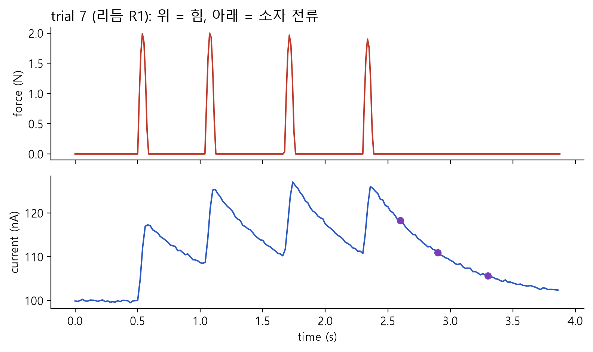
결과가 뜻하는 것. trial 0 saved (1/240)은 "trial 번호 0을 저장했다. 240개 중 1개 끝남"이라는 뜻입니다. 8개에서 멈추고 left: 232(남은 수)를 알려 줍니다. 둘째 그림 창은 지금까지 잰 trial마다의 가장 큰 힘입니다. 아직 8개뿐이라 점이 적습니다.
나머지 이어서. 할 일 LIMIT = 8을 LIMIT = None으로 바꾸고 ▷. 이미 끝난 8개는 건너뛰고 9번째부터 잽니다.
PS C:\Users\내이름\Desktop\ion-projects-code> & python mylabs/p4_6_run.py
run: runs/mock_c_dev01_day1 (MOCK, no instruments)
resume: 8/240 trials already done
trial 8 saved (9/240)
trial 9 saved (10/240)
trial 10 saved (11/240)
trial 57 saved (58/240)
trial 107 saved (108/240)
trial 157 saved (158/240)
trial 207 saved (208/240)
...
trial 239 saved (240/240)
done: 240/240 trials
all trials done -> analyze with labs 3 and 4 (RUNS = ["mock_c_dev01_day1"])
PS C:\Users\내이름\Desktop\ion-projects-code>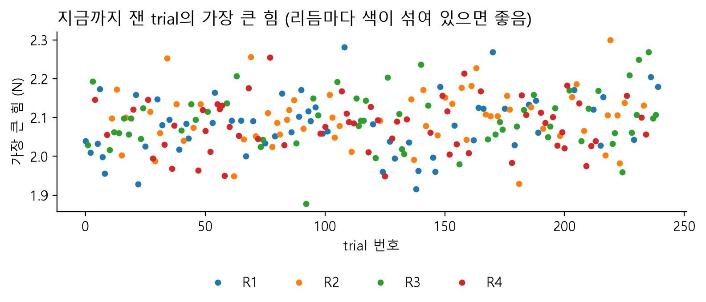
첫 줄 resume: 8/240 trials already done이 "8개는 이미 끝나서 건너뛴다"는 뜻입니다. TERMINAL에는 처음 3개, 50개마다 하나, 마지막 하나만 찍습니다. mock은 몇 초면 끝나지만, 실물은 trial 하나에 약 10초(쉬기 5초 + 누름 약 4초 + 통신)라 240개에 약 40분입니다.
MOCK 기록을 분석해 보기. 실습 3·4를 열어 RUNS 줄을 RUNS = ["mock_c_dev01_day1"]로 바꾸고 ▷. 폴더가 하나뿐이라 실습 4에는 ① 같은 날 점수만 나옵니다. 연습을 다시 하고 싶으면 실습 6을 그대로 ▷ 하면 됩니다(다 끝난 mock 폴더는 지우고 처음부터).
실물로: 먼저 8 trial만 시험 [실물 미검증]
할 일 실습 6의 1번 상자를 이렇게 바꾸고 Ctrl+S → ▷.
| 설정 | 값 |
|---|---|
MOCK |
False |
CONFIG |
"config_c.json" (앞 카드에서 만든 것) |
PORT |
내 COM 번호 (예: "COM6") |
RUN_NAME |
"c_dev01_day1" (소자 이름 + 날짜 순번 권장) |
LIMIT |
8 |
TERMINAL은 MOCK 때와 같은 모양으로 찍힙니다. 첫 줄이 run: runs/c_dev01_day1 (SMU GPIB0::22::INSTR, tapper COM6)처럼 내 장비를 가리키고, trial 줄이 약 10초마다 하나씩 나옵니다. 시작 직후 2초쯤은 아무것도 안 나옵니다(board 연결 대기). 그동안 servo가 소자를 두드리는 소리가 납니다.
예상되는 차이: 전류 곡선에 소스미터의 잡음과 drift가 보이고, 읽기 간격이 20 ms보다 들쭉날쭉할 수 있습니다(설정의 nplc에 따라 15–40 ms). 둘째 그림 창의 힘은 "각도 → 힘" 표의 값 근처여야 합니다.
could not open port 'COM6': PermissionError(13, …)→ Arduino IDE(Serial Monitor)가 port를 쥐고 있음. IDE를 닫고 다시.could not open port 'COM6': FileNotFoundError(…)→ COM 번호가 틀림.TimeoutError: trial 0: no answer from tapper→ COM 번호가 다른 장치이거나 board에 C_tapper가 안 올라감.RuntimeError: trial 0: tapper rejected E,gap_range→ 리듬 파일의 간격이 firmware 한계(150–5000 ms) 밖.2400 계열이 아닙니다→ 소스미터 모델(P2.0R).판독 시점까지 기록이 없습니다→ 소스미터 읽기가 너무 느려 +1.0초 시점 전에 끝난 것(설정 파일의nplc줄이기).기존 측정(…)과 조건이 다릅니다→ 설정 파일이나 리듬 파일을 바꾼 것. 바꾼 측정은 새RUN_NAME으로 합니다.- (오류 문구는 Python·pyserial이 내는 형식에 맞춘 예상입니다.) 멈춘 뒤에는 소스미터 앞면 OUTPUT이 꺼졌는지 직접 봅니다.
실물로: 나머지 trial (LIMIT = None)
할 일 8 trial의 힘·전류 그림이 정상이면 LIMIT = None으로 바꾸고 ▷. 약 40분 동안 장치와 소자를 건드리지 않습니다. 도중에 멈췄으면(정전, 창 닫기) 같은 파일을 다시 ▷ 하면 이어서 잽니다.
분석하기 (실습 3 · 4)
할 일
- 실습 3의
RUNS를["c_dev01_day1"]로 바꾸고 ▷. 리듬 4행끼리 peak force·hold가 비슷한지 봅니다. 뚜렷이 다르면 아래 점수는 믿지 않습니다. - 실습 4의
RUNS를["c_dev01_day1"]로 바꾸고 ▷. trial이 240개라 연습 때보다 오래(1–2분) 걸릴 수 있습니다. 결과는 TERMINAL과runs\c_report.md에 나옵니다.
표·그림 모양은 연습 때와 같고 숫자만 내 소자의 것입니다 [실물 미검증].
다른 날 한 번 더 (New session)
할 일 다른 날 같은 소자로, 실습 6의 RUN_NAME만 "c_dev01_day2"로 바꿔 TARE → 8 trial 시험 → 나머지 trial을 반복합니다. 그다음 실습 4의 RUNS를 ["c_dev01_day1", "c_dev01_day2"]로 바꾸면 ② 다른 날 점수가 나옵니다. 연습 때처럼 NORMALIZE = True로도 비교합니다.
지금 경로는 전류를 trial 내내 계속 읽고, end readout 값(+0.3/0.6/1.0 s)은 기록에서 나중에 뽑습니다 (offline feature extraction). 그래서 이 결과는 "끝 state에 리듬 정보가 남아 있는가"를 보여 줄 수 있지만, "끝에서만 읽는 장치가 전력·ADC 횟수를 줄였다"를 보여 주지는 않습니다. 그것은 실제로 낮은 sampling rate로만 읽는 장치(P4.7)를 만들어 따로 재야 합니다.
offline feature extraction: 기록을 다 받은 뒤에 그 안에서 숫자 몇 개를 뽑는 것. 경기를 처음부터 끝까지 녹화한 뒤 마지막 장면만 잘라 보는 것과 같습니다. 녹화(계속 읽기)에 든 전기는 그대로 썼으므로, "끝에서만 읽는 장치"를 만든 것이 아닙니다.
결과 표
| 센서·모델 | 끝 1개 | 끝 3개 | 계속 읽기(50 Hz) |
|---|---|---|---|
| ideal memoryless model (힘 기록) | |||
| FSR (상용 비교) | |||
| 절연 탄성체 control | |||
| 이온 소자 |
실습 4의 열 이름과 대응: "ideal memoryless model" = force_end3·force_full, "이온 소자" = end1·end3·full. FSR·절연 탄성체 control은 실습 6으로 같은 방법으로 잰 별도 폴더(RUN_NAME)를 분석합니다. 빈칸은 측정하기 전까지 비워 둡니다.
평가는 두 가지로 나눠 보고합니다. 같은 날·같은 소자 안에서 trial을 나눈 cross-validation(①)과, 다른 날 또는 다른 소자로 시험(②)입니다. 앞의 것은 "그날 그 소자에서의 성능"일 뿐 새 날·새 소자의 성능이 아닙니다. 앞의 것만 높고 뒤의 것이 chance 수준이면 drift나 그날의 조건을 배운 것일 수 있습니다. 연습에서 본 0.25가 바로 그 모습입니다.
다음 단계 조건. 결과 표의 "이온 소자" 줄과 control 줄이 채워지고, easy cue 점검과 ① / ② 구분이 함께 적혀 있으면 P4의 본 과제는 끝입니다. P4.6·P4.7은 선택입니다.
P4.6. 소자 여러 개 (선택)
사진을 찍을 때 셔터를 짧게 열면 빠른 움직임이, 길게 열면 느린 움직임이 잘 담깁니다. 흔적이 남는 시간(τ)이 짧은 소자와 긴 소자도 그렇습니다. τ가 다른 소자 4개를 나란히 두고 같이 누르면, 끝에서 한 번 읽을 때 값이 4개 생깁니다. 짧은 흔적과 긴 흔적을 동시에 보는 셈입니다. 대신 비용도 4배이므로 같이 셉니다.
- 배선: 소자마다 위쪽 단자를 같은 read voltage에, 아래쪽을 각자의 shunt resistor(R_s)를 거쳐 V_ref에 연결하고, 각 shunt 전압을 ADS1115에 연결합니다 (ADS1115 하나는 differential 입력 2쌍 → 소자 4개면 ADS1115 두 개, 또는 단일 입력으로 V_ref 대비 측정).
shunt resistor (R_s): 전류를 전압으로 바꾸려고 전류 길에 끼우는 작은 resistor(저항). resistor 양 끝의 전압 = 전류 × R_s. 예: 1 µA가 100 kΩ을 지나면 0.1 V.
V_ref: 기준으로 삼는 일정한 전압.
ADS1115: board에 붙이는 외부 ADC module. 입력 4개, differential(두 입력의 차를 재는 방식) 2쌍. 1초에 최대 860번(860 SPS) 숫자로 바꿉니다.
- 시간: 4채널은 sequential conversion입니다. 860 SPS 설정에서 1회 약 1.2 ms + I²C 시간 → 4개에 약 5–6 ms 차이가 나고, 이 시간차를 기록합니다.
sequential conversion (순차 변환): 채널 4개를 동시에가 아니라 차례로 읽는 것. 출석을 한 명씩 부르는 것처럼, 첫 소자와 넷째 소자를 읽는 시각이 몇 ms 다릅니다.
I²C: board와 ADS1115가 선 두 가닥으로 숫자를 주고받는 통신 방식. 주고받는 데도 시간이 조금 걸립니다.
- 면적·제작: 소자 4배, 각 소자의 편차 관리.
비교는 "같은 소자 4개" vs "τ가 다른 소자 4개"입니다.
P4.7. board로 판단하기 (선택 · 설계만 있음, 구현 안 됨)
이 절은 설계 메모입니다. 이 단계용 firmware는 코드 묶음에 없습니다. P4.5까지로 P4를 끝내도 됩니다.
하려는 일은 이렇습니다. 지금까지는 기록을 PC로 옮겨 PC가 리듬을 맞혔습니다. P4.7은 board가 끝에서 몇 번만 직접 읽고, 그 자리에서 리듬을 판단하게 합니다. 그래야 "끝에서만 읽으면 숫자 만드는 횟수와 전기가 줄어든다"를 실제로 잴 수 있습니다.
- 그대로 쓰는 것: PC에서 만든 판단 규칙(readout)을 board로 옮기는 도구가 이미 있습니다. export_mcu.py가 리듬 4개용 규칙을 숫자 표(
W[4][NF],BIAS[4])로 내보내고, board의 점수 계산·고르기 코드(scores()·decide(), P3.6)는 답이 몇 가지든 점수가 가장 큰 답을 고릅니다. 리듬 4개용으로 내보낸 규칙이 PC와 같은 답을 내는지는 Python 시험으로 확인했습니다. - 새로 만들어야 하는 것: P3.6의 측정 부분(DAC로 전압 pulse를 차례로 거는 부분)은 P4에 맞지 않습니다. P4용으로는 "작은 read voltage를 계속 걸어 둠 → tapper의 X trigger(또는 load cell 신호)를 기다림 → +0.3/0.6/1.0초에 채널마다 한 번씩 읽음 → 읽은 값으로 점수 계산"이라는 순서를 새로 짜야 합니다. 이 부분은 아직 작성·검증하지 않았습니다.
- 비교할 숫자: 판단 하나당 ADC 변환 횟수(end readout: 소자 수 × 3회 vs 계속 읽기: 약 100회 이상), 끝을 찾는 데 드는 읽기, 에너지(P3.7의 정의), 정확도.
DAC (digital-to-analog converter): ADC의 반대. 숫자를 전압으로 바꾸는 부품입니다. P3에서는 이것으로 소자에 전압 pulse를 걸었습니다.
결과로 남길 것
- 소자 구조(평평/요철) 사진과 단면, 측정 환경(온도·습도) 기록
- P4.0 압력 응답: 이온 소자 vs control
- E1–E4 곡선과 control
- 리듬 과제 표 + Easy-cue check 결과 + Same session / New session 구분
- (선택) 소자 4개 비교, readout 횟수·에너지 비교
- 소재 조건(가교도·두께·계면·환경)과 관측의 관계를 관측 / 가설로 나눈 표. "가교제를 늘리면 τ가 길어질 것" 같은 문장은 측정으로 확인하기 전까지 가설 열에 둡니다.
문제 해결
| 증상 | 확인 |
|---|---|
| servo가 떨거나 board가 재부팅 | servo 전원 분리, GND 연결 |
| load cell 값이 계속 흘러감 | 예열 10분, 거치대 고정, TARE 다시 |
| 힘이 갑자기 이상한 값 | board가 다시 켜져 영점이 지워짐(USB·RESET·Upload). TARE 다시 |
| 눌러도 전류 변화가 거의 없음 | 요철 구조, 더 얇은 위 전극, 접촉 면적, control과 비교 |
| 날마다 결과가 다름 | 온도·습도 기록, 소자 노화, 팁 마모 |
| control도 리듬을 잘 맞힘 | easy cue(힘·마지막 간격·readout 시점) 다시 점검 |
AI에게 맡길 때
첨부한 C_tapper.ino와 p4_6_run.py(공용 코드 c_run.py를 부름)로 리듬 실험을 하려고 해. 내 장비: Keithley [모델], NU40 DK(nRF52840),
HX711 [SPS 설정]. 실행 전에 확인해 줘: ① PC와 tapper 시각 맞추기 오차, ② HX711 sampling rate로 80 ms 누름의
최대 힘을 잡을 수 있는지, ③ 리듬별로 남는 easy cue. 코드를 고치면 전체 파일로 주고, 통신 형식은 유지해 줘.